1 Ördekgiller
Boz Kaz
Anser anser, Greylag Goose
Lokal olarak az sayıda ürer. Kışın göç alır ve daha geniş bir alanda yayılış gösterir.
Üreme döneminde az sayıda Göller Bölgesi, İç Anadolu ve Doğu Anadolu’daki bataklık sulakalanlarda bulunur. Sultansazlığı gibi birkaç alanda eskiden yüksek sayılarda üremiştir. Türkiye Kuş Raporları üreyen popülasyonun son 50 yılda çok ciddi bir düşüş yaşadığını göstermektedir (OST, 1969, 1972, 1975, 1978; Beaman, 1986; Martins, 1989; Kirwan & Martins, 1994, 2000; Kirwan et al., 2003; Kirwan, Özen & Demirci, 2009; Kirwan & Özen, 2014). Eskiden ürediği sulakalanların çoğu kurutulmuştur. Örneğin, Ereğli Sazlığı’nda Nisan 1970’te 120 yuva ve 300 birey varken Temmuz 1996’da 160 birey sayılmış, bugün ise hiçbir üreyen çift kalmamıştır.
Üreme sonrasında tüy dökümü sırasında kalabalık sürüler bazı sulakalanlarda toplanır; Temmuz 1984’te Kulu Gölü’nde 800 birey, bilinmeyen bir tarihte Sultansazlığı’nda 12.000 birey ve Eylül 2004’te Kuyucuk Gölü’nde 10.000 birey kaydedilmiştir.
Geçiş sırasında tüm bölgelerde görülen ve ekimden itibaren mart sonuna kadar kalan bir kış göçmenidir. Kışlayan sürüler genellikle kıyısal bölgelerde yoğunlaşır. Son yıllarda görülen sürüler 300 bireyden azdır. KOSKS verilerine göre eskiden daha bol bulunduğu bilinmektedir. Ülke genelinde ortalama 5000 birey, en yüksek ise 1967’de 11.200 birey olarak sayılmıştır. Alanlarda yapılan sayımlarda Kızılırmak Deltası’nda 5000 birey, Meriç Deltası’nda 4500 birey ve Hotamış Sazlığı’nda 1500 birey tespit edilmiştir.
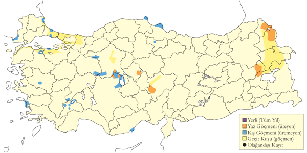
Üreme
Yuvalama Alanı: Göllerdeki adalarda genellikle küçük gruplar halinde ürer.
Yuvası: Kulu Gölü’nde gözlenen yuvası kuru toprağa kazılmış sığ bir çukurdur ve çevredeki bitki örtüsü ile küçük tüylerle astarlanmıştır. Ereğli Sazlığı’ndaki yuvası ise saz ve diğer sucul bitkilerden oluşan, su seviyesinin üstünde kalan bir yapının üzerine kurulmuştur.
Yumurta Sayısı: Türkiye’de yumurta sayısına ilişkin güvenilir gözlem yoktur. Yuvadan ayrılmış beş yavru, en az beş yumurta koyduğunu gösterir. Diğer ülkelerde genellikle 4-6 yumurta bırakır.
Üreme Dönemi: Mart sonunda yumurta koyar. En erken yavrular 23 Nisan 1988’de Kulu Gölü’nde, 27 Nisan 1988’de Sultansazlığı’nda, 30 Nisan 1968’de Mogan Gölü’nde ve 30 Nisan 1973’te Ereğli Sazlıkları’nda gözlenmiştir. 20 Nisan 1996’da Marmara’da, 14 Mayıs 1969’da Karadeniz’de, 16 Mayıs 1970’te ve 24 Haziran 1983’te Doğu Anadolu’da kaydedilen yavrular gecikmiş üremeyi göstermektedir.
Alttürler ve Sınıflandırma
Ülkemizde rubrirostris alttürü bulunur. Bu alttür turuncu gagasıyla Batı ve Orta Avrupa’da bulunan pembe gagalı anser alttüründen ayrılır.
Sakarca
Anser albifrons, Greater White-fronted Goose
Lokal olarak bulunan ve zaman zaman kalabalık sürüler oluşturan bir kış konuğudur.
Ekim sonu ile nisan başı arasında lokal olarak görülen bir kış konuğudur. Genellikle ocak ve şubat aylarında daha yaygın ve yüksek sayıda olur. Soğuk geçen kışlarda Türkiye’de kışlayan birey sayısı artar. En kalabalık sürüler Meriç Nehri boyunca, Tuz Gölü çevresinde ve Konya Ovası’nda yoğunlaşır. Büyük Menderes Deltası ve Doğu Akdeniz’deki sulakalanlarda da önemli sayılarda toplanabilir. Son zamanlarda Güneydoğu Anadolu’daki baraj göllerinde küçük sürüler halinde görülmeye başlanmıştır. Nadiren yaz aylarında sulakalanlarda az sayıda birey kalabilir.
Kış ortası su kuşu sayımlarında (KOSKS) ülke genelinde en yüksek sayı 1968-69 kışında 98.600 birey olarak kaydedilmiştir. 1987’de ise toplam 84.000 birey sayılmıştır. Ancak daha sonra kışlayan birey sayısında ciddi bir düşüş yaşanmıştır. 1990’lı yıllarda genellikle 20.000-30.000 arasında değişen sayılar kaydedilmiş 1993’te 11.822 (DHKD, 1993), 1999’da 3956 (DHKD, 1999) ve 2005’te 3891 birey (Çağlayan et al., 2005) tespit edilmiştir. Kışın soğuk geçtiği 11 Şubat 2006’da Büyükçekmece’de 15.000 birey sayılmıştır, bu da son yıllardaki en yüksek sayıdır. Dolayısıyla Türkiye’de kışlayan nüfusun 1970’lerde 100.000’ler seviyesinden 2010’larda 5000 civarına indiği söylenebilir.
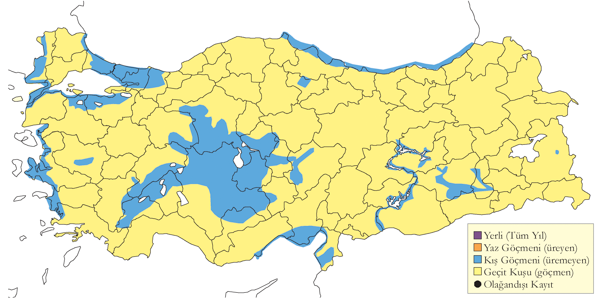
Üreme
Türkiye’de yuvalamaz. Avrasya ve Kuzey Amerika’nın tundra bölgelerinde yuvalar.
Alttürler ve Sınıflandırma
Türkiye’de nominat alttürü bulunur.
Küçük Sakarca
Anser erythropus, Lesser White-fronted Goose
Az sayıda gelen düzenli kış konuğudur.
Her yıl çok az sayıda kaydedilen bir kış konuğudur. Sayıları genellikle 10’dan azdır ve diğer kaz türleriyle karışık olarak görülebilir. Bugüne kadar Türkiye’ye gelen bireylerin İskandinavya’da üreyen ve Balkan ülkelerinde kışlayan göç yoluna ait olduğu düşünülmüştür. Yunanistan’da bir alanda kışlayan ve koruma çalışmaları sayesinde sayıları artan bir sürünün kış ortasında oradan kaybolması, Marmara ve Ege bölgelerinde bir kışlama alanı olabileceği ihtimalini doğurmuştur. Ancak yapılan aramalara rağmen burada düzenli kullanılan bir kışlama alanı bulunamamıştır.
Doğu Anadolu’da 20 Kasım 2004’te Haçlı Gölü’nde uydudan izlenen bir birey sinyal verince, doğuda bir kışlama alanı olasılığı gündeme gelmiştir (Morozov & Aarvak, 2004). Nitekim Van Gölü ve Erçek Gölü kıyılarında sayıları 340’a ulaşan sürüler düzenli olarak tespit edilmiştir. Bugün, Türkiye’de kışlayan ana nüfusun Doğu Anadolu’da bulunduğu söylenebilir ((AOU), 2000).
2000 öncesindeki kayıtlara bakıldığında; 29 Aralık 1997’de Göksu Deltası’nda bir birey (Kirwan et al., 2003), 23 Ocak 1993’te Göksu Deltası’nda bir birey (DHKD, 1993), 6 Nisan 1990’da Seyfe Gölü’nde 12 birey (Kirwan & Martins, 1994), 24 Aralık 1986’da Bafa Gölü’nde bir erişkin ve iki genç birey (Kasparek, 1988) ve 16 Şubat 1967’de Kocabaş Çayı’nın ağzında (Çanakkale) iki birey (OST, 1969) kaydedilmiştir. 1945 ile 1965 yılları arasında ve ekim ile ocak aylarında, çoğunluğu Büyükçekmece ve Küçükçekmece Göllerinden gelen 12 kayıt vardır. Ancak bu kayıtlar, tür tanımını destekleyecek belgeden yoksundur (Kumerloeve, 1970a).
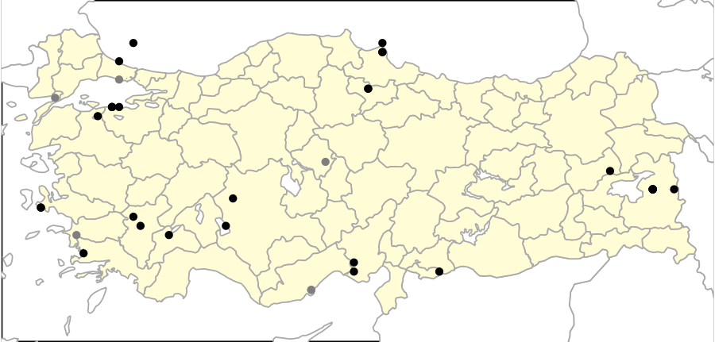
Üreme
Türkiye’de yuvalamaz. Kuzey İskandinavya’dan Doğu Sibirya’ya kadar uzanan tundra kuşağında ürer.
Alttürler ve Sınıflandırma
Monotipik bir türdür.
Tundra Kazı
Anser serrirostris, Tundra Bean Goose
Nadiren gelen kış konuğudur.
2000 yılından sonra 5 kez kaydedilmiştir. 26 Şubat 2013’te Yedikır Barajı’nda, 4-21 Şubat 2015’te Kızılırmak Deltası’nda birer birey görülmüştür. 31 Ocak 2016’da Manyas Kuş Gölü’nde 3 birey kaydedilmiş, aynı alanda 2-24 Ocak 2019’da yine 3 birey gözlenmiştir. Acıgöl’de 24 Aralık 2023 ile 3 Şubat 2024 arasında bir birey gözlenmiştir.
Tundra Kazı, önceleri Tayga Kazı ile beraber tek bir tür altında Tarla Kazı olarak sınıflandırılıyordu. Dolayısıyla, taksonomik revizyonun yapıldığı tarihten önceki kayıtlarda Tarla Kazı olarak tanımlanmıştır. 2000 yılından sonra çekilen fotoğraflarda özellikle gaga renklenmesi incelenmiş ve bu kuşların tamamı Tundra Kazı olarak tanımlanmıştır. Fotoğrafı veya betimlemesi olmayan eski kayıtların hangi türe ait olduğu ise belirsiz kalacaktır.
Tarla Kazı olarak tanımlanmış kuşlar, Ege, Akdeniz ve İç Anadolu’daki sulakalanlarda ara sıra yüksek sayılarda kaydedilmiştir. 1870’ler ve 1880’lerde Mersin’de toplanan bireyler (Schrader, 1891) ilk kayıtlar arasındadır. 1966-2000 yılları arasında çoğunlukla ocak ile mart ayları arasında 15 kez kaydedilmiştir. 2 Mart 1965’te Ereğli ve Karapınar arasında 90 birey (Kumerloeve, 1970a), 15-16 Ekim 1969’da Karamık Sazlıkları’nda 13 birey (OST, 1972), 30 Nisan 1988’de Seyfe Gölü’nde, 30 Ocak 1992’de Marmara Gölü’nde 61 birey, 9 Ocak 1993’te Büyükçekmece Gölü’nde 64 birey (DHKD, 1993) ve 24 Ocak 1993’te Göksu Deltası’nda bir birey (DHKD, 1993) kaydedilmiştir. Türkiye’deki kışlayan Sakarca sayılarındaki sert düşüş, muhtemelen Tarla Kazı olarak tanımlanmış kuşlar için de geçerlidir.
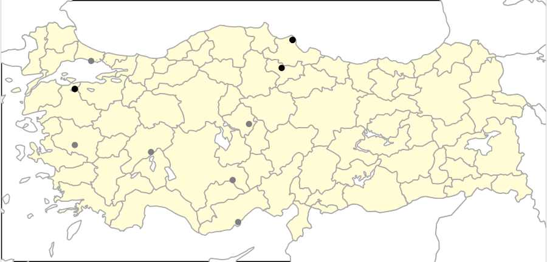
Üreme
Türkiye’de yuvalamaz. Üreme alanı Kuzey İskandinavya’dan Doğu Sibirya’ya uzanan tundra kuşağındadır.
Alttürler ve Sınıflandırma
Tayga Kazı, yakın zamana kadar Tarla Kazı olarak bilinen bir türden ayrılan yeni bir türdür. Beş alttüre sahip olan Tarla Kazı (Anser fabalis), iki gruba ayrılmıştır: fabalis, johanseni ve middendorffii alttürleri Tayga Kazı (Anser fabalis), serrirostris ve rossicus alttürleri ise Tundra Kazı (Anser serrirostris) olarak sınıflandırılmıştır.
Yosun Kazı
Branta bernicla, Brant Goose
Rastlantısal konuktur.
Batı Avrupa’nın Atlantik kıyılarında kışlayan bir türdür. Türkiye ile yakın coğrafyasında rastlantısal bir konuktur. 6 Nisan 1981’de Küçük Menderes Deltası’nda iki birey gözlenmiştir (Beaman, 1986). 3-4 Eylül 1973’te Ardeşen açıklarında koyu karınlı bernicla alttürüne ait iki birey kaydedilmiştir (OST, 1975). 1969 yılında Acıgöl’den gelen bir iddia ise kabul edilmemiştir (Dijksen & Kasparek, 1988). 7 Şubat 1945’te Büyükçekmece’de bir birey Prenses Zeyneb Halim tarafından vurulmuştur, ancak kuşun gövdesi korunamamıştır (Kumerloeve, 1970a). Ocak 1889’da kışın soğuk geçtiği bir yılda İstanbul Maltepe’de düzenli olarak, Şubat 1891’de ise büyük sürüler halinde İstanbul Kadıköy’de görülmüştür (Mathey-Dupraz, 1920–24).
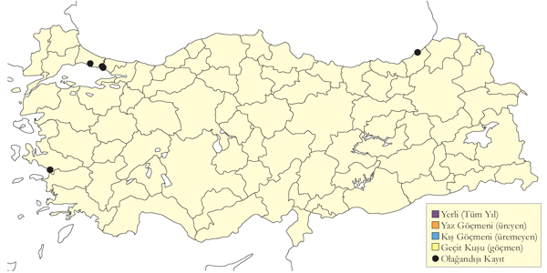
Üreme
Türkiye’de yuvalamaz. Orta ve Kuzey Sibirya’nın Kutup Denizi kıyılarında yuvalar.
Alttürler ve Sınıflandırma
Bir kayıtta kuşun alttürü bernicla olarak tanımlanmıştır. Keza, Kuzeybatı Avrupa’da kışlayan bernicla alttürünün Türkiye’de görülmesi olasıdır. Yunanistan’daki bir kayıt da bu alttüre aittir (Handrinos & Akriotis, 1997).
Ak Yanaklı Kaz
Branta leucopsis, Barnacle Goose
Rastlantısal konuktur.
5 Ocak 2003’te Büyükçekmece Gölü’nde bir birey gözlenmiş ve detaylı olarak belgelenmiştir. 1946/47 kışında Sakarya Deltası’nda bir birey, 1961 sonbahar/kışında ise başka bir birey vurulmuştur. İkinci kuşun tahniti Eylül 1964’te Ankara’da bulunmuş, ancak sahibi tahniti satmaya yanaşmamıştır (Kumerloeve, 1966). Bu iki kaydın belgeleri yetersizdir (Kumerloeve, 1970a).
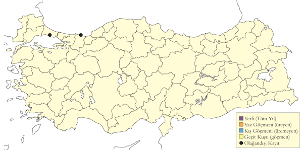
Üreme
Türkiye’de yuvalamaz. Grönland, İzlanda, Kuzey Batı Rusya ve Baltık Denizi kıyılarında yuvalar.
Alttürler ve Sınıflandırma
Monotipik bir türdür.
Sibirya Kazı
Branta ruficollis, Red-breasted Goose
Az sayıda gelen düzensiz kış konuğudur.
Türkiye’de düzenli kışladığı bilinen bir alan yoktur; ana kışlama alanı Romanya ve Bulgaristan’ın Karadeniz kıyısıdır. Özellikle soğuk kışlarda, bireyler veya gruplar halinde Türkiye’ye inerler. 1964 ile 2008 yılları arasında 64 kayda rastlanmıştır. Bu kayıtların 15’i Marmara’da, 12’si İç Anadolu’da, 8’i Karadeniz’de, 6’sı Akdeniz’de ve 4’ü Ege’de alınmıştır. Kayıtların çoğu aralık sonu ile şubat başı arasındadır. Çoğunlukla bir veya birkaç kuş sayılmış, ancak 5 kayıtta 40 ila 100 bireyden oluşan nispeten kalabalık sürüler de gözlenmiştir. 2001/2002 kışında Türkiye genelinde 192 birey sayılmıştır.
Ülke genelinde yaygın olarak av mağazaları ve avcılık kulüplerinde tahnit örneklerine rastlanması ve avcıların gözlem beyanları (Dijksen & Kasparek, 1985), bu kuşların kayıtlardan daha yaygın olabileceğini gösterir. İç Anadolu’dan gelen eski kayıtlar, Kış Ortası Su Kuş Sayımları sırasında kalabalık kaz sürülerinin sistematik incelenmesi ile ortaya çıkmıştır. Sakarca kazı sürüleri içinde bu türün fark edilmemesi olasıdır.
1946/47 kışında Küçükçekmece’de Kosswig tarafından gözlenmiştir (Kumerloeve, 1966). 1947 veya 1954 yıllarında kış boyunca (27 Kasım - 6 Mart) Büyükçekmece ve Meriç Nehri civarında düzenli olarak 9 birey ve Beylik Mandra’da 2 birey kaydedilmiştir (Kumerloeve, 1970a). 1959 yılında belirtilmemiş bir alanda İshakoğlu tarafından sekiz birey gözlenmiş ve bir birey vurulmuştur (Makatsch, 1950). 12 Kasım 1964’te Kuyucuk Gölü’nde 400 boz kazın arasında 2 erişkin ve 1 genç birey kaydedilmiştir (Kumerloeve, 1964). 17 Ocak 1965 tarihinde Çekmece’de E. Hirzel tarafından 3 birey görülmüştür.
Türkiye’de açıklama gerektiren bir yaz veya üreme kaydı vardır. 5 Ağustos 1982’de Erçek Gölü’nde 14 erişkin ve 8 yavru kaydedilmiştir (Kasparek & Ven, 1983). Bu kayıt ya hatalı bir gözlem olarak kabul edilmeli ya da avcılar tarafından yakalanıp evcilleştirilen kuşların üremesinin bir sonucu olarak yorumlanmalıdır.
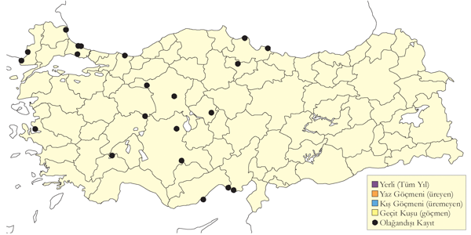
Üreme
Türkiye’de yuvalamaz. Doğu Sibirya’da tundra kuşağında yuvalar.
Alttürler ve Sınıflandırma
Monotipik bir türdür.
Sessiz Kuğu
Cygnus olor, Mute Swan
Lokal olarak az sayıda yuvalar. Yaygın olarak ve nispeten çok sayıda bulunan bir kış konuğudur.
Üreme kayıtlarının çoğu üç alandan gelir: Gala Gölü, Gediz Deltası ve Kızılırmak Deltası. Ulusal üreme popülasyonu muhtemelen 20 çiftten daha azdır. Kızılırmak Deltası’ndan alınan ilk muhtemel üreme kaydı 1968 yılına aittir (Dijksen & Kasparek, 1985).
Geçmişte, birkaç alanda yüzlerce çiftlik bir üreme nüfusu bulunuyordu. Marmara Gölü’nde 50 çift, Akşehir Gölü’nde ise 100 çift üremiştir (Kumerloeve, 1961). Ereğli Sazlığı en çok gözlem kaydının alındığı alandır. Lenz burada 1968’de 11 yuva, 1969’da bir yuva ve 1970’de üç yuva bulmuştur. Ereğli Sazlığı’nın yok olması ayrıntılı olarak belgelenmiştir (Kılıç & Kasparek, 1990), bu nedenle üreyen nüfusun azalışı da gözlenmiştir. Eski üreme alanlarında yok olmasının başlıca nedeni sulakalanların kurutulmasıdır.
Kış aylarında Karadeniz, Marmara ve Ege Bölgelerinde yaygın olarak en yüksek sayılarda gözlenir. Toplam kışlama popülasyonu 1000-10000 birey arasında değişmektedir. Meriç Deltası ve Gala Gölü kışlayan nüfusun büyük kısmının toplandığı alanlardır. 1993’te 1244, 1999’da 8900 ve 2003’te 2000 birey kaydedilmiştir (DHKD, 1993, 1999). Kışın sert geçtiği yıllarda bu sayı artmakta olup, 1999’da ülke genelinde toplamda 9088 birey kaydedilmiştir.
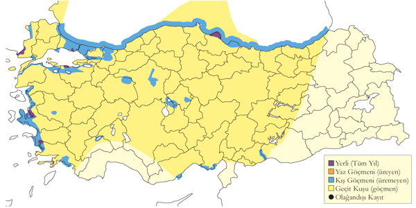
Üreme
Yuvalama Alanı: Geniş sazlık alanlar, su aynası bulunan büyük göller ve bataklıklarda yuvalar.
Yuvası: Türkiye’de henüz bir yuva tarifi yapılmamıştır. Diğer bölgelerde yuva su kıyısındaki zemin üzerinde, küçük bir adacıkta ya da sığ sudaki sazların üstüne kurulur. Yuva, saz ve diğer sucul bitkilerden oluşan büyük bir yığının ortasında çukur şekilli bir yapıdır.
Yumurta Sayısı: Türkiye’deki yumurta sayısı bilinmez. Ancak Türkiye dışındaki yuvalarda genellikle 5-7 yumurta bıraktığı bilinmektedir.
Üreme Dönemi: Nisan başında yumurtlamaya başlar, yavrular ise mayıs ve temmuz ayları arasında görülür. EGE. 13 Mayıs 1899’da İzmir’de bir sazlıkta yuvalayan bir çift kaydedilmiştir (Selous, 1900). İÇA. 6 Temmuz 1976’da Ereğli Sazlığı’nda bir çift ve 4-5 genç yavru, 17 Temmuz 1982’de bir çift ve dört genç, 16 Mayıs 1987’de ise yumurtadan yeni çıkmış yavrular gözlenmiştir.
Alttürler ve Sınıflandırma
Monotipik bir türdür.
Küçük Kuğu
Cygnus columbianus, Tundra Swan
Lokal olarak ve az sayıda bulunan bir kış konuğudur.
1993 yılına kadar nadir bir kış konuğu olduğu düşünülmüştür. Ancak daha sonra, önce Burdur Gölü ve Göller Bölgesi’nde, ardından Meriç Deltası’nda düzenli olarak bulunduğu tespit edilmiştir. Meriç Deltası’nda, karışık ve kalabalık kuğu sürüleri içinde sayıları 1000’e kadar ulaşabilir. İç Anadolu ve Göller Bölgesi’nde ise küçük gruplar halinde bulunur. Genellikle kasım ve nisan ayları arasında gözlenir.
Türkiye’de kışlayan kuşların üreme alanları ve göç koridorları tespit edilmiştir (Vangeluwe et al., 2018). 2015-2017 yıllarında GPS ve GMS vericileriyle yapılan çalışmada, yuvalama alanlarının Yamalo-Nenets Özerk Bölgesi’ndeki Yamal olduğu belirlenmiştir. Göç sırasında Ob Koyu, Turgay Ovaları, Kuzey Hazar Kıyıları ve Azov Denizi gibi durak alanları üzerinden göç ettikleri ortaya çıkmıştır.
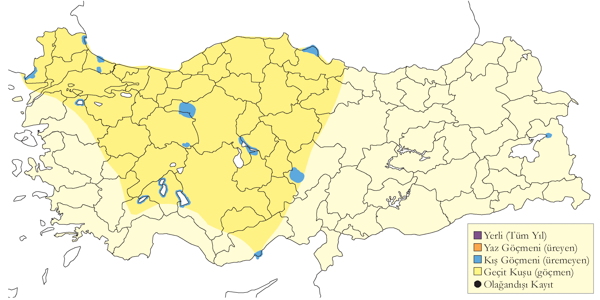
Üreme
Türkiye’de yuvalamaz. Sibirya Tundra kuşağında yuvalar.
Alttürler ve Sınıflandırma
Türkiye’de Eski Dünya’da yaşayan bewickii alttürü bulunur; bu alttür, gaga kökü ve yüz derisinin sarı olmasıyla tanınır. Amerika’da yaşayan columbianus alttürü ise siyah gaga ve siyah yüz derisi ile kolaylıkla ayırt edilebilir.
Ötücü Kuğu
Cygnus cygnus, Whooper Swan
Yaygın olarak ve az sayıda görülen bir kış konuğudur.
Ekim sonu ile nisan başı arasında yaygın olarak az sayıda görülen bir kış konuğudur. Ocak ve şubat aylarında en yüksek sayıya ulaşır. Trakya’da Meriç Deltası hem Türkiye’deki ana toplama bölgesidir, üstelik türün Balkanlar’daki en önemli kışlama alanıdır. 25 Ocak 1998’de Meriç Deltası’nda 1200 birey kaydedilmiş, bu Türkiye’deki en yüksek sayıdır (Boyla & Eken, 1998). Türkiye’ye gelen kuşlar, Ukrayna ve Kırım ile Batı Karadeniz Bölgesi arasındaki deniz üzeri göç rotasını kullanır (Brazil, 2003). Doğuda, 30 Ekim 1995’te Sodalı Gölü’nde 164 birey (Adızel, 1998), 1992’de Diyarbakır Kabaklı Barajı’nda 133 birey kaydedilmiştir (DHKD, 1992).
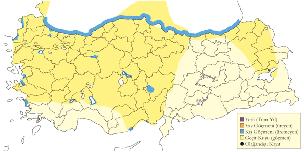
Üreme
Türkiye’de yuvalamaz. Üreme bölgesi Kuzey Avrasya’dadır
Alttürler ve Sınıflandırma
Monotipik bir türdür.
Nil Kazı
Alopochen aegyptiaca, Egyptian Goose
Durumu belirsizdir. Çoğunlukla egzotik tür kategorisinde değerlendirilir.
28 Nisan 1986’da Kulu Gölü’nde gözlenen bireyin doğal ve rastlantısal bir konuk olduğu düşünülmüştür. 11 Nisan 1911’de Urfa’nın güneyinde iki birey gördüğünü söyleyen Weigold’un (1912-13) kaydı kabul edilmemiştir (Kasparek, 1992).
İstanbul ve Ankara’da gözlenen kuşların esaretten kaçmış olabileceği düşünülmektedir. 6-13 Temmuz 2002’de Ankara’daki bir parkta bir çift fotoğraflanmış; 31 Mart 2012’de İstanbul Riva’da, 13 Mart 2012’de Ankara Hacettepe Kampüsü’nde, 5-24 Kasım 2013’de Etimesgut’ta ve 25 Mayıs-13 Haziran 2014’de Eymir Gölü’nde birer birey gözlenmiştir.
1906 ve 1928 yılları arasında Kıbrıs’ta nadir görülen bir kış göçmeni olarak kaydedilmiş ve 1958, 1962 ve 1989 yıllarında bireyler gözlenmiştir. Eskiden Suriye ve Filistin’de ürediği düşünülmüş (Vaurie, 1965), ancak sonrasında Suriye’de hiçbir güvenilir kaydın olmadığına karar verilmiştir (Kumerloeve, 1967a; Baumgart, Kasparek & Stephan, 1995).
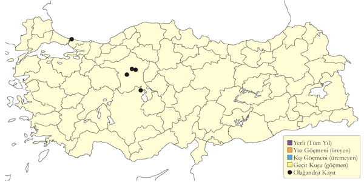
Üreme
Türkiye’de yuvalamaz. Üreme alanları çoğunlukla Sahra Altı Afrika’dadır.
Alttürler ve Sınıflandırma
Monotipik bir türdür.
Suna
Tadorna tadorna, Common Shelduck
Lokal olarak az sayıda ürer. Aynı zamanda lokal olarak çok sayıda bulunabilen bir kış konuğudur.
Ege Bölgesi, Göller Bölgesi, İç ve Doğu Anadolu’da geniş ve tuzlu sulakalanlarda ürer. Başlıca üreme alanları Gediz Deltası, Bolluk Gölü, Kulu Gölü, Tuz Gölü ve Van Gölü çevresidir. Gediz Deltası’nda 1996 yılında üreyen popülasyonun 8 çift olduğu tahmin edilmiştir (Eken, 1997a). 24 Haziran 1992’de Bolluk Gölü’ndeki bir adada 12 yuva tespit edilmiştir.
Üreme sonrası tüy değiştiren kuşlar, ağustos ile ekim ayları arasında toplanır. Bu dönemde Erçek Gölü’nde 2500 birey, Kulu Gölü’nde ise 700 birey sayılmıştır.
Kışlayan toplam nüfus genellikle 1000-5000 birey arasında değişir. Ana kışlama alanı olan Yumurtalık Lagünü’nde, 16 Şubat 2006’da 5390 birey kaydedilmiştir. Acıgöl’de ise 1969-70 yıllarında 3450 birey, 1968-69 yıllarında 4900 birey, 2004 yılında 1802 birey ve 2005 yılında 2928 birey sayılmıştır. Diğer alanlarda daha küçük gruplar halinde kışlar.
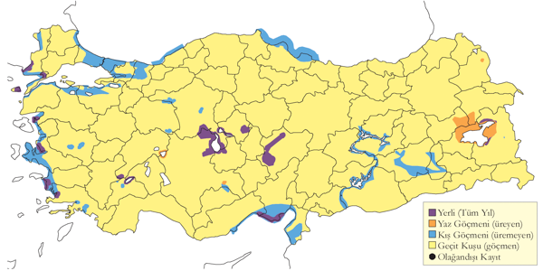
Üreme
Yuvalama Alanı: Geniş, sığ ve tuzlu sulakalanlarda, adalar, sedde duvarları ve çalı altlarında yuvalar.
Yuvası: Avrupa’da yuvaların çoğu tavşan oyuklarında, tünelin 1-2 metre içinde bulunur. Ancak Türkiye’deki yuvalar genellikle yerdedir. Bolluk Gölü’ndeki yuvaların bazıları tamamen açıkta, bazıları ise kısmen ya da tamamen çalı altında, bir tanesi ise doğal bir oyuğun içinde bulunmuştur.
Yumurta Sayısı: Genellikle 6-9 yumurta bıraktığı gözlenmiştir. Bolluk Gölü’ndeki yuvalarda gözlenen 10-18 yumurtanın, birden fazla dişi tarafından bırakılmış olması muhtemeldir.
Üreme Dönemi: Gediz Deltası’nda haziran başında yavrular gözlenmiştir (Eken, 1997a). İç Anadolu’da nisan sonu ile haziran başında, Doğu Anadolu’da ise haziran ortasında yumurtladığı düşünülmektedir.
Alttürler ve Sınıflandırma
Monotipik bir türdür.
Angıt
Tadorna ferruginea, Ruddy Shelduck
Yaygın ve çok sayıda bulunan yerli türdür. Kışın göç alır, sayıları artar.
Üremek için genellikle yüksek kesimlerdeki küçük gölcükler, baraj gölleri, ıslak çayırlar ve dereleri tercih eder; birçok ördek ve kaz türünün aksine büyük sulakalanlarda yuvalamaz. İlk tahminlere göre üreyen popülasyonun 4000 ile 8000 çift arasında olduğu öne sürülmüştür (Tucker & Heath, 1994). Ancak, kış ortası su kuşu sayımlarına dayanarak popülasyonun azaldığı düşünülmüş ve üreyen popülasyonun 1200-5100 çift olduğu tahmin edilmiştir (Emirogullari et al., n.d.).
Temmuz ve eylül ayları arasında tüy değişimi için bazı sulakalanlarda büyük sürüler halinde toplanır. Erçek Gölü’nde 20.000, Sultan Sazlığı’nda 11.000, Kulu Gölü’nde 10.000 ve Eylül 1936’da, bugün kurutulmuş olan Emir Gölü’nde 10.000-15.000 birey sayılmıştır. Kış öncesinde Kasım 2004’te Sarıyar Barajı’nda 8.000 birey ve Kuyucuk Gölü’nde 6.000 birey kaydedilmiştir.
Kış aylarında daha yaygın olarak görülür. En yüksek kış sayımında Türkiye genelinde 10.115 birey kaydedilmiş olup (Çağlayan et al., 2005), genellikle 4000-4500 birey sayılmıştır. Ocak-Şubat 1993’te sadece 711 birey, 18 Ocak 2004’te Sarıyar Barajı’nda 5636 birey ve 18 Şubat 2006’da 7641 birey kaydedilmiştir. İç Anadolu’da üreme sonrası toplanan sürülerde bir azalma gözlenirken, baraj göllerinin sayısında artış olmuştur. Kış sayımı toplamlarının yaz sonu toplamlarından düşük olması, türün dağınık şekilde kışladığını veya kış aylarında güneye göç ettiğini göstermektedir. Toplam kışlayan nüfusun 2600 ile 28.500 birey arasında değiştiği tahmin edilmektedir (Emirogullari et al., n.d.).
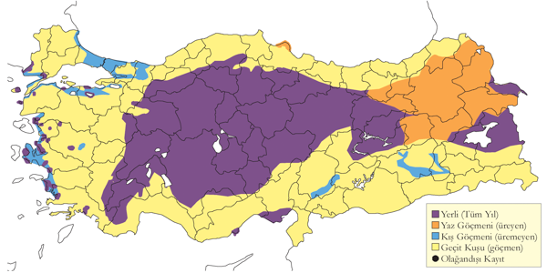
Üreme
Yuvalama Alanı: Genellikle göl kenarındaki sarp kayalıklarda, tepelerde ve yamaçlardaki çukur ve çatlaklarda, açık alanlarda yuvalar. Sıkça kayalıklarda yuva yaptığı gözlenmiştir. Beyşehir Gölü’ndeki bir adada, kayaların ve harabelerin taşları arasında ürediği kaydedilmiştir. 22-24 Mayıs 1998’de Ereğli yakınlarındaki bir kayalıkta, muhtemelen eski bir Kızıl Şahin yuvasında kuluçkaya yattığı gözlenmiştir.
Yuvası: Türkiye’de yuvası bitki artıkları, hav tüyleri ve bazı diğer tüylerle kaplanmış bir oyuk şeklindedir. 30 Nisan 2003’te Akköy yakınlarındaki dik bir yamaca giren bir dişi, muhtemelen bir tavşan yuvası olan bir oyuğa girerken gözlenmiş, ancak oyuğun derin olması nedeniyle yuva incelenememiştir.
Yumurta Sayısı: Genellikle 8-12 yumurta bıraktığı kaydedilmiştir.
Üreme Dönemi: Akdeniz ve Ege bölgelerinde mart sonu yumurtlama başlar. Diğer bölgelerde kuluçka nisan ve mayıs aylarında gerçekleşir.
Alttürler ve Sınıflandırma
Monotipik bir türdür.
Boz Ördek
Mareca strepera, Gadwall
Lokal olarak birkaç alanda yuvalar. Yaygın olarak nispeten az sayılarda görülen bir kış konuğudur.
Kızılırmak Deltası, bu türün Türkiye’deki en önemli üreme alanıdır ve yaklaşık 200 çift burada ürer. Türkiye’de toplam üreyen popülasyonun 500 ile 5000 çift arasında olduğu düşünülmüştür (Tucker & Heath, 1994). Ancak, günümüzde bu sayının azaldığı açıktır.
İç Anadolu’daki ilkbahar göçü marttan nisan başına kadar belirgin bir şekilde gözlenir. Akdeniz’deki kıyısal sulakalanlarda ise nadiren 1000’den fazla birey kaydedilir. Kış ortası sayımlarda 1967’de Manyas Gölü’nde 5000, 1969’da Akşehir Gölü’nde 7500 ve 1971’de Hotamış Sazlığı’nda 2490 birey sayılmıştır. 1967-1973 yılları arasında ülke genelinde çoğunlukla 3000’den fazla birey kaydedilirken, 1986-2005 yılları arasında bu sayı 1000-1500 seviyelerine düşmüştür. Son yıllarda ise yeniden artış göstermiş ve 2020 kışında Kızılırmak Deltası’nda 10.000’den fazla birey sayılmıştır.
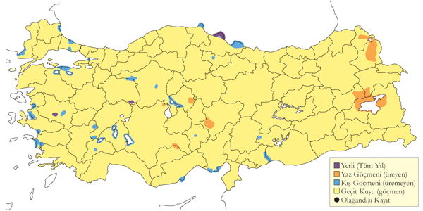
Üreme
Yuvalama Alanı: Göl kıyılarında ve adalarındaki yoğun bitki örtüsü, sazlıklar ve sık bitkilerle kaplı taşkın alanlarda yuvalar. Kızılırmak Deltası, Karamık Gölü, Kulu Gölü, Bolluk Gölü, Mogan Gölü, Ahlat Sazlıkları, Haçlı Gölü ve Van Gölü’nde yuvaladığı gözlenmiştir.
Yuvası: Yuva, yerde bir çukura kurulur ve bitkisel malzeme ile dişinin tüyleriyle kaplanır.
Yumurta Sayısı: Türkiye’deki yuvalarda yumurta sayısı 6-15 arasında değişir. İç Anadolu’da 7-15 yumurtalı yuvalar gözlenmiş ve bu yuvaların bir kısmında 1 ila 6 yumurtanın başka ördek türlerine ait olduğu tespit edilmiştir. Kulu Gölü’ndeki yuvalarda 6 Mayıs 1972’de 3-11 yumurta ve 14 Temmuz 1971’de 7 yumurta sayılmıştır (Kasparek, 1987). 17 Mayıs 2004’te Bolluk Gölü’ndeki bir yuvada 8 yumurta bulunmuştur.
Üreme Dönemi: Kızılırmak Deltası’nda nisan başında yumurtlamaya başlar (Hustings & Dijk, 1994). İç Anadolu’da nisan sonu ile temmuz arasında, Doğu Anadolu’da ise haziran ile eylül arasında yavrulara rastlanmıştır.
Alttürler ve Sınıflandırma
Türkiye’de nominat alttür görülür. Tür eskiden Anas cinsi altında sınıflandırılıyordu.
Fiyu
Mareca penelope, Eurasian Wigeon
Yaygın olarak çok sayıda bulunan kış konuğu ve geçit türüdür.
Ege, Akdeniz ve İç Anadolu’nun sulakalanlarında kalabalık sürüler halinde kışlar. 1960’lı ve 1970’li yıllarda düzenli olarak ortalama 150.000 birey sayılmıştır. En yüksek sayılar 1968’de 208.600, 1969’da ise 458.800 birey olarak kaydedilmiştir. Ancak günümüze gelindiğinde ciddi bir düşüş yaşanmış, 1986 ile 2005 yılları arasındaki düzenli sayımlarda yalnızca dört yıl 40.000’den fazla birey kaydedilebilmiştir. Genellikle eylül sonunda gelir ve nisan sonuna kadar kalır.
İç Anadolu’da mart sonu ve nisan başı arasında yüksek sayılarda göç eder. Bazı göçmen bireyler mayıs sonuna kadar bölgede kalır. Nadiren de olsa, İç ve Doğu Anadolu’da üremeden yazı geçiren bireyler gözlenebilir.
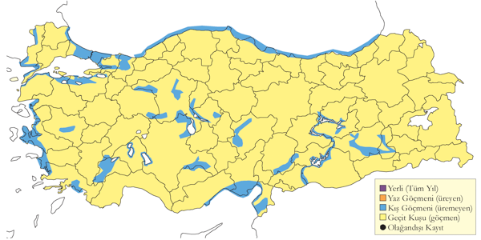
Üreme
Türkiye’de yuvalamaz. Kuzey Avrupa’da yuvalar.
Alttürler ve Sınıflandırma
Monotipik bir türdür. Eskiden Anas cinsi altında sınıflandırılırdı.
Yeşilbaş
Anas platyrhynchos, Mallard
Yaygın olarak üreyen yerli bir türdür. Kışın göç alır, yüksek sayılara ulaşabilir.
Uygun yaşam alanlarının bulunduğu bölgelerde az sayıda yuvalar. En yaygın olarak İç Anadolu Bölgesi’ndeki sulakalanlarda görülür, diğer bölgelerde ise oldukça lokal bir dağılım gösterir. En yüksek yuvalama sayısı, 400-600 çiftin kaydedildiği Kızılırmak Deltası’nda olmuştur (Hustings & Dijk, 1994).
Sonbaharda göç alır ve popülasyonu artar. Kışlayan gruplar nisan başına kadar bölgede kalır. En yüksek sayılarda Karadeniz, Marmara ve Ege bölgelerinde kaydedilirken, Akdeniz ve İç Anadolu’da nispeten az sayıda, Güneydoğu Anadolu ve Doğu Anadolu’da ise çok daha az sayıda bulunur. 2000 ve 2020 yılları arasında kışlayan nüfus ortalama 20.000 birey civarındayken, kışın sert geçtiği 2005 yılında Türkiye genelinde toplam 106.140 birey ve Kızılırmak Deltası’nda 50.000 birey sayılmıştır.
1960’lı ve 1970’li yıllarda kışlayan popülasyonun 100.000’ler seviyesinde olduğu bildirilmiştir. 1967 yılında Kızılırmak ve Yeşilırmak Deltası’nda yaklaşık 52.000, Büyük Menderes Deltası’nda 42.000; 1968 yılında Manyas ve Uluabat Gölleri’nde 42.000; 1969 yılında Büyük Menderes Deltası’nda 80.000, Akyatan Lagünü’nde 40.000 ve Amik Gölü’nde 30.000; 1970 yılında ise Meriç Deltası’nda 34.500 ve Sultansazlığı’nda 30.000 birey kaydedilmiştir.
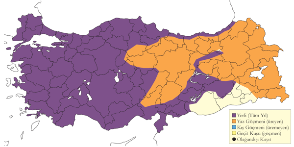
Üreme
Yuvalama Alanı: Göl ve nehir adalarında, sazlıklarda veya göl, sazlık ve subasar çayırların kıyılarındaki sık bitki örtüsü içinde yuvalar.
Yuvası: Yuvasını genellikle bitki örtüsünün altına, topraktaki bir oyuğa yapar. Diğer bölgelerde ağaç kovuklarına veya karga gibi kuşların ağaçlardaki eski yuvalarına yuvaladığı bilinir; ancak Türkiye’de bu tür yuvalara henüz rastlanmamıştır.
Yumurta Sayısı: Genellikle 5-9 yumurta bırakır, ancak yumurta sayısı 2-14 arasında değişebilir. Bir yuvadaki yumurtaların 14’ten fazla olması, birden fazla dişinin aynı yuvaya yumurtladığını gösterir.
Üreme Dönemi: Kıyı bölgelerinde marttan itibaren, diğer bölgelerde ise nisan veya mayısta yumurtlar. Yavrular mayıs başından temmuz sonuna kadar görülebilir. Marmara: 18 Nisan 1993’te Kocaçay Deltası’nda yavrularıyla gözlenen bir dişi, en erken üreme kaydıdır (Ertan, 1996). Karadeniz: 19-20 Mayıs 1992’de Yeniçağa Gölü’nde yuvalarda hem yumurta hem yavrular gözlenmiştir. 5 Mayıs 1992’de Kızılırmak Deltası’nda sezonun ilk yavruları görülmüştür (Hustings & Dijk, 1994). 16 Mayıs 1967’de Manyas Gölü’nde dokuz yumurtalı bir yuva kaydedilmiştir. 20 Haziran 1973’te Trakya’da altı yavrulu bir dişi gözlenmiştir. İç Anadolu: 1971’de Yarma’daki birçok yuvada diğer türlerin yumurtalarına rastlanmıştır; örneğin, bir yuvada 17 Yeşilbaş, üç Boz Ördek ve üç Macar Ördeği yumurtası tanınmıştır. 13-15 Temmuz 1971’de Kulu Gölü’nde sekiz yuva incelenmiş ve yuvalarda 2-12 yumurta bulunmuştur (Kasparek, 1987). Başka bir tarihte, mayıs ve haziran aylarında yumurtalı yuvalar ve mayıs ortasından itibaren yavrular gözlenmiştir. Doğu Anadolu: En erken kayıt, 14 Haziran 1968’de Erçek Gölü’nde kaydedilen yavrulardır. Aynı yerde 28 Haziran 1968’de beş ve sekiz yumurtalı iki yuva bulunmuş, 9 Haziran 2001’de Balık Gölü’nde iki yumurtalı yuva kaydedilmiştir (Kasparek & Ven, 1983).
Alttürler ve Sınıflandırma
Türkiye’de nominat alttürü bulunur.
Kaşıkgaga
Spatula clypeata, Northern Shoveler
Lokal olarak az sayıda yuvalar. Aynı zamanda yaygın olarak çok sayıda bulunan bir geçit türü ve kış konuğudur.
İç Anadolu ve Doğu Anadolu’daki birkaç büyük sulakalan ile Kızılırmak Deltası’nda yuvalar (Boyla, Sinav & Dizdaroğlu, 2018). 1970’lerde Kulu Gölü ve Kızılırmak Deltası bilinen üreme alanlarıdır.
Tüm bölgelerde yaygın olarak kaydedilen bir geçit türüdür. Göçmen gruplar, ilkbaharda mart başından nisan sonuna kadar, sonbaharda ise eylül ortasından kasım başına kadar zaman zaman yüksek sayılarda görülür. Eylül ayında Kulu Gölü’nde 7000, Sultansazlığı’nda 9000 ve mart sonunda Kızılırmak Deltası’nda 4500 birey sayılmıştır.
Ülkenin batı ve orta bölgelerinde kışlar. 2000 ile 2020 yılları arasında ülke çapında kışlayan kuş sayısı genellikle 5000 bireyin altında kalmıştır; ancak kışın soğuk geçtiği 2005 yılında 13.576 birey sayılmıştır. 1990’lı yıllarda daha yüksek sayılar kaydedilirdi; örneğin, 1993’te toplam 7898 birey, 1999’da ise 13.114 birey kaydedilmiştir. Daha önceki yıllarda yapılan sayımlarda; 1967’de Büyük Menderes Deltası’nda 23.000, Kızılırmak Deltası’nda 8000 birey ve 1993’te 4564 birey sayılmıştır. 1967-1973 yılları arasında İç Anadolu’daki alanlarda 3000’den fazla bireyden oluşan sürüler olağandı.
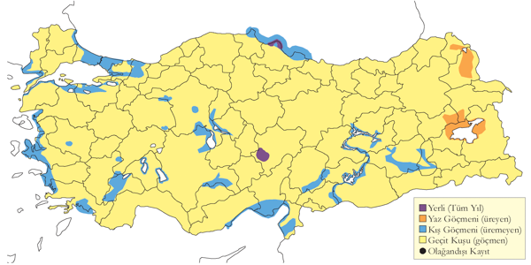
Üreme
Yuvalama alanı: Büyük sulakalanlarda yuvalar.
Yuvası: Kulu Gölü’nde bir adadaki seyrek bitki örtüsü içinde yuvalamıştır. Yuvasını çıplak zeminde sığ bir oyuk açarak yapar ve içine ot, bitki gövdeleri ve tüylerini karıştırarak döşer.
Yumurta sayısı: 8-10 yumurta bıraktığı kaydedilmiştir.
Üreme Dönemi: Türkiye’deki üreme sezonu hakkında yeterli veri bulunmamaktadır; diğer ülkelerde ise üreme sezonu genellikle nisan başı ile mayıs sonu arasındadır.
Karadeniz: 6-7 Temmuz 1972’de Kızılırmak Deltası’nda dört ve beş yavrulu iki dişi kaydedilmiştir (Dijksen & Kasparek, 1985). 1992 yılında üreme kanıtlanamamış ve popülasyonun 0-1 çift olduğu belirtilmiştir (Hustings & Dijk, 1994). 1971 yılı Temmuz ortasında kaydedilen yumurtalı yuvalar, başarısız bir üremenin ardından gerçekleşen ikinci bir üreme denemesi olarak değerlendirilmiştir.
İç Anadolu: 14-15 Temmuz 1971’de Kulu Gölü’ndeki bir adada sekiz ve on yumurtalı iki yuva tespit edilmiştir. 5-6 Ağustos 1972’de iki ve dört yavrulu iki yavru grubu gözlenmiştir (Kasparek, 1987). 31 Mayıs 1987’de Kulu Gölü’nde yavrular gözlenmiş, 19 Haziran 1992’de dokuz yumurtalı bir yuva bulunmuştur. Haziran 1977’de Eşmekaya’da beş yavrusuyla birlikte bir dişi gözlenmiştir (Schubert, 1979).
Doğu Anadolu: 29 Mayıs 1969’da Van Gölü’nde kur davranışı gözlenmiştir.
Alttürler ve Sınıflandırma
Monotipik bir türdür.
Kılkuyruk
Anas acuta, Northern Pintail
Nispeten yaygın olarak bulunan bir geçit türü ve kış konuğudur. Nadiren yuvalar.
Son yıllarda 1998 ve 1999’da, tek bir alanda, Girdev Gölü’nde üremiştir. İlkbaharda ve yazın İç Anadolu’da birçok erişkin kaydı olsa da, kanıtlanmış üreme kayıtları az sayıdadır. Üreyen popülasyonun 500 ile 1000 çift olması iddiası tamamen geçersizdir (Tucker & Heath, 1994).
Genellikle eylül ortasından nisan başına kadar batı ve orta bölgelerde görülür.
Ülke genelinde kışlayan nüfus 10.000 bireyden azdır. 1986’da toplam 25.700 birey, 1992’de 11.070 birey ve 1999’da 13.573 birey kışlamıştır. Kışlama popülasyonunda çarpıcı bir azalma belgelenmiştir. 60’li yıllarda düzenli olarak 100.000’in üzerinde sayılırdı. Örneğin, 1967’de Büyük Menderes Deltası’nda 60.000 birey, Emir Gölü’nde 70.000 birey, 1969’da Akyatan Gölü’nde 100.000 birey ve Gâvur Gölü’nde 50.000 birey kaydedilmiştir. Bilhassa ılıman geçen kışlarda daha yüksek sayılarda kaydedilebilir. Eski tarihlerde bazı alanlardaki sayımların sonuçlarının güvenilirliği sorgulanabilir, örneğin, 1970’de Sultansazlığı’ndaki sayılan 160.000 birey muhtemelen abartılı bir tahmindir. Bu ve diğer ördek türlerinin önemli sayılarda kışladığı birkaç sulakalan kısmen ya da tamamen kurutulmuş durumdadır. Diğer yandan son yıllarda oluşan baraj göllerinde kışlamaya başlamıştır.
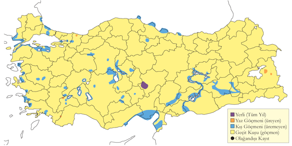
Üreme
Yuvalama alanı: Büyük göllerde ve sulakalanlarda yuvalar.
Yuvası: Kulu Gölü’ndeki büyük adada kıyı vejetasyonu içinde yuvalamıştır. Yerdeki bir delikte yaptığı yuvasını bitkisel malzemeler, hav tüyleri ve kontür tüyleri ile kaplanmıştır.
Yumurta sayısı: 6-10 yumurta koyduğu kaydedilmiştir.
Üreme dönemi: Görünüşe göre mayıs ayında yumurtlar. KAR. Kızılırmak Deltası’nda üreme davranışları gözlenmiş, ürediği kesinleşmemiştir (Hustings & Dijk, 1994). AKD. Haziran 1998 ve 1999’da Girdev Gölü’nde yavrular gözlenmiştir. İÇA. 22 Mayıs 1992’de Kulu Gölü’nde yedi ve on yumurtalı iki yuva, 19 Haziran 1992’de 6 ila 9 yumurtalı beş yuva bulunmuştur. 24 Haziran 1992’de Bolluk Gölü’ndeki bir çalının altına gizlenen yuvada 11 yumurta sayılmıştır.
Alttürler ve Sınıflandırma
Türkiye’de nominat alttürü bulunur.
Çıkrıkçın
Spatula querquedula, Garganey
Yaygın olarak az sayıda üreyen bir yaz göçmenidir. Bunun yanında göç döneminde daha yaygın ve çok sayıdadır. Nadiren kışlar.
Ördeklerin arasında esasen yaz göçmen olan tek türdür. Şubat ortasından itibaren görülmeye başlar, ekim sonuna kadar kalır. Leylekle beraber en erken gelen göçmen kuşlardandır. Sazlık sulakalanları tercih eder, en yoğun ürediği alanlar İç ve Doğu Anadolu’dadır. Güneydoğu Anadolu’da iki alanda üremesi olasıdır.
İlkbahar ve sonbahar boyunca Türkiye’nin tüm bölgelerinde yüzlerce, hatta binlerce birey sürüler halinde gözlenebilir. İlkbahar geçişi şubat sonundan mayıs sonuna kadar devam eder. Sonbahar geçişinde ise ağustos sonu ile eylül başı arasında Karadeniz kıyıları boyunca göçmen sürülere rastlanabilir.
Nadiren Marmara, Ege ve Akdeniz’de az sayıda kışlar. Olağandışı yumuşak geçen 1968-69 kışında Göksu Deltası’nda 3000 birey ve Gâvur Gölü’nde 5000 birey sayılmıştır. Güncel tarihlerde; Ocak 2002’de Güllük Deltası’nda 65 birey, Şubat 2002’de Bafa Gölü’nde 58 birey, Aralık 2002’de Çukurova’da 89 birey, 4 Aralık 2010’de Karkamış Barajı’nda iki birey kışlamıştır.
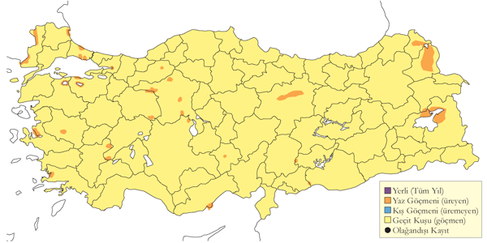
Üreme
Yuvalama alanı: Sazlık sulakalanlarda yuvalar.
Yuvası: Göl kenarlarındaki ıslak çayırlar, bataklıklar ve sazlıklarda, ikisinin bir arada olduğu alanlarda ve göl kenarındaki vejetasyonun içinde ürer.
Yumurta sayısı: Türkiye’den veri yoktur, diğer yerlerde olağan yumurta sayısı 8-11’dir.
Üreme dönemi: Nisan ortasından itibaren ürer. Yavrular temmuza kadar görülebilir. KAR. 19 Mayıs 1992’de Yeniçağa Gölü’nde yeni bozulmuş ancak yumurtaların taze olduğu açıkça anlaşılan iki yuva, 6 Mayıs 1993’te yakınlardaki ıslak bir çayırlıkta bir yuva bulunmuştur. 13 Mayıs 1986’da Abant Gölü’nde 17 yavru ve bir dişi gözlenmiş, yumurtlama tarihinin nisan ortası civarında olduğunu hesaplanmıştır. 2 Ağustos 1971’de Kızılırmak Deltası’nda bir çift ve yedi yavru kaydedilmiştir. İÇA. 10-15 Mayıs 1991’de Hotamış Sazlığı’nda yavrulu birkaç çift gözlenmiş (Kirwan, 1993), 27 Temmuz 1971’de Kulu Gölü’nde büyük yavruları olan altı çift kaydedilmiş, Haziran ve Temmuz 1968’de Mogan Gölü’nde 1-2 kuluçka gözlenmiş, 27 Temmuz 1971’de Yarma’da büyük yavruları olan en az dört çift tespit edilmiştir.
Alttürler ve Sınıflandırma
Monotipik bir türdür.
Çamurcun
Anas crecca, Eurasian Teal
Lokal olarak az sayıda ürer. Bunun yanında yaygın olarak ve çok sayıda bulunan kış konuğudur.
İç Anadolu, Doğu Anadolu ve Kızılırmak Deltası’nda yuvalar. Kızılırmak Deltası’nda 1992’de 15-20 çift üremiştir (Hustings & Dijk, 1994), Doğu Anadolu’dan teyit edilmiş üreme kaydı ise çok azdır.
Geçiş sırasında eylül başından nisan başına kadar ülkenin batı ve orta bölgelerinde yaygın olarak çok sayıda görülebilir. Marmara ve Karadeniz bölgelerinde ara sıra yüksek sayılarda kaydedilebilir.
Kışın hem iç bölgelerde hem de kıyısal sulakalanlarda yüksek sayıda bulunur. Ülke çapında kışlayan nüfus 100.000 birey seviyesindedir. Son yıllarda kışlayan nüfusta düşüşler yaşanmış, örneğin 1988’de 21.000 birey ve 1989’da 13.400 birey sayılmıştır. Bu düşüş, aslında diğer yüzey ördeklerinde olduğu gibi 1960’lardan beri süre gelmektedir. 1968-69’da toplam 270.400 birey ve 1969-70’de 326.700 birey sayılmıştır. Son sayımda sadece Sultansazlığı’nda 200.000 birey gözlenmiştir. Alanda sayılan ancak türü tespit edilemeyen 400.000 ördeğin de çamurcun olabileceği düşünülürse, alandaki kışlayan çamurcun sayısı 600.000 birey olabilir.
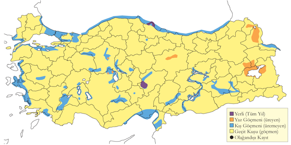
Üreme
Yuvalama alanı: Göllerde ve sazlıklarda ürer.
Yuvası: Yuva ve yumurta sayısı Türkiye’den bilinmez. Diğer yerlerde yuvasını yerdeki bir oyuğa yapar ve genellikle yapraklar, bitkisel malzemeler, hav tüyleri ve kontur tüyleriyle kaplar. Sulakalanlarda yüksek otların üzerine yuvalar, nadiren sudan uzağa da yuva yapabilir.
Yumurta sayısı: Türkiye’den veri yoktur, ancak diğer yerlerde olağan yumurta sayısı 8-12’dir.
Üreme dönemi: Nisan ortasından itibaren ürer, yavrular temmuza kadar görülebilir. KAR: 29 Mayıs 1979’da Kızılırmak Deltası’nda içinde yumurta olan bir yuva bulunmuş, 28 Temmuz 1971’de dokuz yavrulu bir dişi ve 6 Ağustos 1971’de beş yavrulu bir dişi gözlenmiştir (Dijksen & Kasparek, 1985). 1992’de popülasyonun 15-20 çift olduğu belirlenmiş, 5 Mayıs’ta dikkati başka yere çekme davranışı gözlenmiş ancak hiçbir yuva bulunamamıştır (Hustings & Dijk, 1994). İÇA: 14 Mayıs 1991’de Hotamış Sazlığı’nda yavrularıyla birlikte birkaç erişkin gözlenmiş, bu da yumurtaların en geç nisan ortasında koyulmuş olduğunu göstermiştir (Kirwan, 1993). 5-6 Ağustos 1972’de Kulu Gölü’nde iki dişinin 7 ve 10 yavrusu gözlenmiştir (Kasparek, 1987). DOA: 24 Haziran 1983’te Haçlı Gölü’nde tek yavrulu bir dişi kaydedilmiştir.
Alttürler ve Sınıflandırma
Türkiye’de nominat alttürü bulunur.
Yaz Ördeği
Marmaronetta angustirostris, Marbled Duck
Türkiye’de üreyen nüfus yok olmuştur.
Göksu Deltası’nda üreyen popülasyonun 2013 yılından sonra yok olmasıyla, üreyen tür olarak Türkiye’deki soyunun tükendiği söylenebilir. Tek tük Doğu Akdeniz, Güneydoğu ve Doğu Anadolu’da görülebilir. Marmara, Ege ve Karadeniz bölgelerinde eski tarihli kayıtları vardır. En yakın üreme alanı Irak’taki Mezopotamya Bataklıkları’dır.
Mart başından ekim başına kadar kaydedilen bir yaz konuğu idi. Göksu Deltası’ndaki üreyen popülasyon, 1989 ile 2013 arasında adım adım azalmıştır. 1989 ve 1991’de yaklaşık 50 çift tespit edilmiş, 2000’li yıllarda bu sayı 10 çifte düşmüş, 2010 ile 2013 arasında sadece 1 ila 2 çift kalmış ve 2014 yılından itibaren alanda görülmemeye başlamıştır. Bu nedenle Türkiye’de üreyen nüfusunun yok olduğu kabul edilmiş (Boyla et al., 2018) ve Yaz Ördeği, Yılanboyun’dan sonra Türkiye’de soyu tükendiği belgelenen ilk kuş türü olmuştur.
1987 yılında Çukurova’da, bugün yok edilmiş olan Dipsiz Gölü’nde 32 çift tespit edilmiştir. İç Anadolu’da Ereğli Sazlığı’nda muhtemelen 1-4 çift, Hotamış Sazlığı’nda 10-15 çift ve Sultansazlığı’nda 1-4 çift üremiştir. Van Gölü havzasında ise Erciş Gölü ve Van Sazlığı’nda az sayıda ürediği teyit edilmiş, bunun yanında Ağrı çevresi, Ahlat Sazlıkları, Bendimahi Deltası ve Kuyucuk Gölü’nde üreme döneminde görülmüştür. 1987 yılında ülke nüfusunun 50-100 çift olduğu düşünülmüştür. Üreme sonrasında Çukurova ve Göksu Deltası’nda 100-200 bireyin toplandığı bilinir. Nadiren az sayıda kışlamıştır. En son sayımlarda 1993’te Çukurova’da dört, 1997’de aynı alanda 35 birey sayılmıştır.
Amik Gölü’nün kurutulmasından önce muhtemelen önemli sayılarda bulunuyordu (Kumerloeve, 1963). Konya havzasındaki Yarma Sazlıkları, Gönenç Gölü ve Karapınar Ovası’nda (Grimmett & Jones, 1989) muhtemelen üremiştir. Mogan Gölü ve Eber Gölü gibi diğer birkaç alanda da üremiş olabilir. Bu alanlar ekolojik özelliklerini kaybettikleri ve türe uygun üreme habitatları barındırmadıkları için artık üremeye elverişli değildir. Üreme sonrası toplanan bireyler, o yıllarda toplam ülke nüfusu hakkında fikir verebilir. Ağustos 1967’de Çukurova’da 2000 birey ve Göksu Deltası’nda 450 birey sayılmıştır.
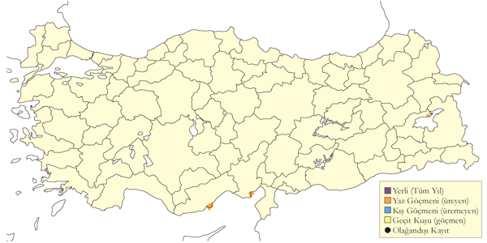
Üreme
Yuvalama Alanı: Çukurova ve Göksu Deltası’nda sığ ve ötrofik göllerde bulunmuştur. Genellikle sazlık adaların, bitişik havuzlar ve sazlıkların bulunduğu yoğun sualtı vejetasyonuna sahip sığ göllerin çevresinde ürer ve geniş sulakalanları tercih eder. Sanılanın aksine acı veya tuzlu sularda değil tatlı suları tercih eder.
Yuvası: 9 Haziran 1993’te Göksu’da, kofanın (Juncus) baskın olduğu ve yakınlarda sazların (Phragmites) da bulunduğu bataklık bir bölgede sığ gölcüklerin olduğu bir alanda, yaklaşık 1 m çapındaki bir Juncus kümesinin içinde, sudan yaklaşık 0,7 m yüksekte gizlenmiş iki yumurtalı bir yuva bulunmuştur. Yuva sazlardan ve bitki gövdelerinden yapılmış dayanıklı bir kâse şeklindedir ve ince bitkisel malzemeyle kaplanmıştır; hav tüyü kullanılmamıştır.
Yumurta Sayısı: Yumurta sayısı 2 ile 12 arasında değişir, ortalama 6,5 yumurta olarak hesaplanmıştır (Green, 1993). Diğer bölgelerde ise tipik yumurta sayısı 9-13’tür (5-18).
Üreme Dönemi: 22 Mayıs 1971’de Çukurova’da kaydedilen altı yavru, en erken kayıttır ve yumurtlamanın nisanın ikinci yarısında başladığını gösterir. Ana yumurtlama dönemi, mayısın ikinci yarısıyla haziran başı arasındadır. Yavrular en erken 7 Haziran’da ortaya çıkar ve temmuz sonuna kadar küçük yavrular görülebilir. Tamamen palazlanmış yavrular temmuz başında kaydedilmiştir. AKD: 1991’de Göksu Deltası’nda yaklaşık 50 çiftten en az 31’i yavru çıkarmıştır. Aynı yıl Göksu Deltası’nda 11 yuvada 8-13, 5 yuvada 4-6 ve bir yuvada 15 yavru sayılmıştır. 15 yavrunun, iki dişinin yumurtalarının bir araya gelmesiyle oluştuğu düşünülmektedir. Benzer şekilde 15-18 Temmuz 1992’de bir dişi 32 yavruyla görülmüştür (Green, 1993). 10 Temmuz 1967’de hem büyük hem küçük yavrular haziran ve temmuzda az sayıda gözlenmiştir (Vielliard, 1968). İÇA: 4-5 Haziran 1971’de Yarma Sazlığı’nda 6 ve 13 yumurtalı iki yuva bulunmuş, bir yuvada bir Yeşilbaş yumurtası görülmüştür. 12 Haziran 1998’de Kulu Gölü’nde tek yavrulu bir erişkin kaydedilmiş ve temmuz ayında üç farklı alanda yavrular gözlenmiştir. DOA: 22 Temmuz 1987’de Van Sazlığı’nda küçük yavruları olan iki çift gözlenmiş, bu gözleme dayanarak yumurtlamanın haziran ortasında olduğu tahmin edilmiştir. Aynı alanda temmuz sonunda ve ağustos başında genç bireyler kaydedilmiştir.
Alttürler ve Sınıflandırma
Monotipik bir türdür.
Macar Ördeği
Netta rufina, Red-crested Pochard
Lokal olarak nispeten çok sayıda ürer. Kışın daha yaygındır ve bazı alanlarda yüksek sayılarda toplanır.
İç Anadolu’daki geniş sodalı ya da tatlı sazlık sulakalanlarda çok sayıda ürer. Sultansazlığı’nda yüksek sayılarda bulunur. 1990’larda Ereğli Sazlığı’nda 500 çift üremişken 1998’de sadece 20 çift üremiş, alanın kurutulmasıyla buradan tamamen yok olmuştur. Kızılırmak Deltası’nda 1992’de 50-75 çift üremiştir (Hustings & Dijk, 1994). Diğer alanlarda nispeten yüksek sayılarda yuvalayanlar yerli veya yarı göçmendir. Çukurova sulakalanları ve Göksu Deltası’nda üreyen nüfus 1990’dan sonra azalmıştır. Türkiye’de üreyen popülasyon 1000-5000 çift olarak tahmin edilmiştir (Tucker & Heath, 1994). Son yıllarda İç Anadolu’da üreyen kuşların sayılarında yaşanan azalma, güncel ulusal nüfusun çok daha az olduğuna işaret etmektedir.
Ülke genelinde geçiş sırasında doğu bölgeleri dışında daha yaygındır. Çoğu zaman yüzeyi donmaya daha az eğilimli olan baraj göllerini tercih eder. Ocak 1967’de 12.000 birey sayılmış, bunun 7000’i bugün kurutulmuş olan Amik Gölü’ndendir. Türkiye genelinde 1992’de 5249, 1996’da 6522 ve 1999’da 6228 birey sayılmıştır. 2000’li yıllarda toplam sayıda artış görülmüş, sadece Beyşehir Gölü’nde Şubat 2003’te 10.000 birey ve Ocak 2005’te 20.000 birey sayılmış, son sayımda hem toplam hem de alan rekoru kırılmıştır.
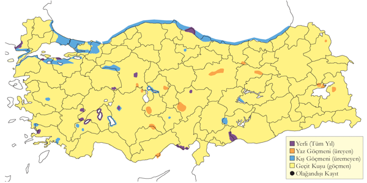
Üreme
Yuvalama Alanı: Yoğun sazlıkların ve su kenarı bitkilerinin bulunduğu tatlı ya da sodalı göllerde ve su aynalarına sahip sazlıklarda ürer.
Yuvası: Yerdeki bir oyuğa yaptığı yuvasını bitkisel malzeme, hav tüyleri ve tüylerle kaplar. Çoğunlukla yoğun vejetasyonun içine, nadiren açıkta (örneğin adalarda) ya da nemli alanlarda su seviyesinin üzerindeki saz öbeklerinin ya da diğer sucul bitkilerin içine genellikle iyice gizlenmiş bir yuva yapar.
Yumurta Sayısı: Türkiye’de gözlenen yumurta sayısı 4-12 olup, ortalama 8,3’tür (18 yuvada). Bir yuvada bulunan 24 yumurta muhtemelen birden fazla dişiye aittir. Yavru sayısı 2-12 arasında değişir ve 16 yuvada ortalama 6,2’dir. Sadece 2-4 yavru çıkarabilmiş 6 dişi ortalamayı düşürmüştür.
Üreme Dönemi: Nisan sonu ile temmuz başı arasında yumurtlar. Yavrular temmuz sonuna kadar görülebilir. MAR: 1 Mayıs 1993’te Kocaçay Deltası’nda yumurtalı bir yuva bulunmuştur (Ertan, 1996). KAR: Kızılırmak Deltası’nda 27 Mayıs 1992’de beş yumurtalı bir yuva bulunmuş, 4 Haziran 1992’de yaklaşık bir haftalık ilk tüylü yavru kaydedilmiş (Hustings & Dijk, 1994) ve 27 Mayıs 1979’da sekiz yavrulu bir aile gözlenmiştir (Dijksen & Kasparek, 1985). AKD: 18 Temmuz 1992’de Karamık Gölü’nde küçük yavrulardan oluşan bir aile gözlenmiştir. İÇA: Çoğu mayısta olmak üzere 25 Nisan’da yumurta kayıtları vardır. En geç kayıt 19 Haziran 1992’de 12 yumurtalı bir yuvadır. Biri 11 Mayıs’ta, çoğu haziranda olan birçok yavru kaydı vardır, en geç 8 Temmuz 1967’de (Vielliard, 1968) ve 5 Ağustos 1972’de küçük yavrular gözlenmiştir. DOA: 21-22 Temmuz 1986’da Van Gölü’nde 7-8 yavrulu üç yavrulu bir aile kaydedilmiştir.
Alttürler ve Sınıflandırma
Monotipik bir türdür.
Elmabaş Patka
Aythya ferina, Common Pochard
Nispeten yaygın ve çok sayıda bulunan yerli ve yarı göçmen, yaygın ve çok sayıda bulunan kış konuğudur.
İç ve Doğu Anadolu’daki sulakalanlarda orta sayılarda üreyen yerli ve yarı göçmendir. 1992’de Kızılırmak Deltası’nda 300-350 çiftin ürediği tahmin edilmiştir (Hustings & Dijk, 1994). Uygun habitatların azlığı nedeniyle Karadeniz, Güneydoğu Anadolu ve diğer bölgelerde lokal olarak bulunur. Muhtemelen gerçek üreme durumunu çarpıtacak şekilde, hatırı sayılır sayıda üremeyen birey özellikle İç ve Doğu Anadolu’da yazı geçirir.
Kışın ve geçiş dönemlerinde ülke genelinde yaygın ve boldur. Son yıllarda ortalama 67.000 bireyden fazla sayılmaktadır. 1996 yılında Beyşehir Gölü’nde 47.000, Uluabat Gölü’nde 42.000 ve ülke genelinde toplamda 250.000 birey sayılmıştır, bu en yüksek kayıtlardandır. 1999’da Eğirdir Gölü’nde 40.000, ülke genelinde ise 137.000 kuş sayılmıştır. 18 yıllık Kış Ortası Su kuşu sayımlarının ortalaması 93.000 kuştur. İstisna olarak 1968-69 kışında 355.000 bireyin kışladığı tahmin edilmiştir. Ekim ortasından itibaren yüksek sayılar gözlemlenir; Göksu Deltası’nda Ekim 1978’de 40.000, Ekim 2002’de Sodalıgöl’de 100-130.000, Kulu Gölü’nde Kasım 1970’de 45.000 ve Kasım 1971’de 28.000 birey kaydedilmiştir.
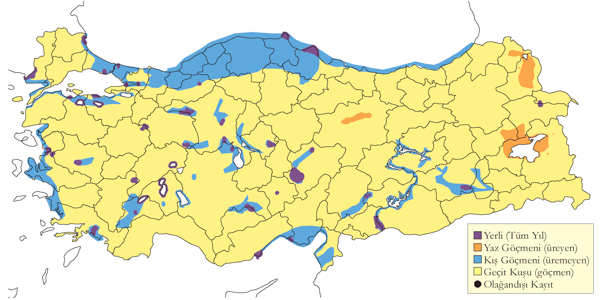
Üreme
Yuvalama alanı: Göl kıyılarındaki sazlıklarda ve su aynalarının bulunduğu sazlık bataklıklarda ürer.
Yuvası: 19 Haziran 1984’te Erçek Gölü yakınlarındaki küçük bir gölde, sık bir örtü içindeki sazların dibine tutturulmuş ve sakarmeke yuvasına benzer şekilde sudan yükseğe yapılmış bir yuva bulunmuştur. Yuva, ölü saz gövdeleri ve diğer bitkisel malzemelerle derin ve düzgün bir kâse şeklinde örülmüş, bol miktarda hav tüyü ve diğer tüylerle kaplanmış dayanıklı bir yapıya sahiptir. Diğer bölgelerdeki yuvalar da genellikle benzer alanlarda olup nadiren su kıyısındaki yoğun bitki örtüsünün içinde kuru zeminde de bulunabilir.
Yumurta Sayısı: Türkiye’de yumurta sayısı kaydedilmemiştir, ancak gözlenen yavru sayısından 8-11 yumurta bırakabileceği düşünülmektedir. Diğer bölgelerde genellikle 6-9 yumurta bırakır. Gözlenen yavru sayısı ortalama 6,6’dır.
Üreme Dönemi: Nisan başı ile haziran ortasına kadar yumurta bırakır. Yavrular temmuz ayında gözlenebilir. KAR. Kızılırmak Deltası’nda 11 Mayıs 1992’de hav tüyleriyle kaplı birkaç günlük yavru, en erken kayıt olarak görülmüş ve bu da yumurtlamanın nisanın ilk haftasında olduğunu göstermiştir (Hustings & Dijk, 1994). 14 Haziran 1984’te yaklaşık 5 günlük yavrulardan oluşan bir kuluçka ile yaklaşık üç haftalık yavrulardan oluşan iki kuluçka gözlenmiştir (Dijksen & Kasparek, 1985). İÇA. Haziran başlarında iki yumurtalı (tamamlanmamış) bir yuva bulunmuş, Haziran 1971’de Boz Ördek yuvalarına iki, dört ve beş yumurta bırakıldığı tespit edilmiştir. 13 Mayıs 1991’de Hotamış’ta yumurtalı bir yuva bulunmuştur (Kirwan, 1993). 1970 yılının mayıs ayı sonunda Eşmekaya’da küçük yavrulardan oluşan beş yavru, 1 Haziran 1969’da Sultansazlığı’nda altı yavru ve haziran-temmuz aylarında diğer alanlarda yavrular gözlenmiştir. DOA. 19 Haziran 1983’te Van Sazlığı’nda yavrularıyla birlikte sekiz dişi kaydedilmiştir.
Alttürler ve Sınıflandırma
Monotipik bir türdür.
Pasbaş Patka
Aythya nyroca, Ferruginous Duck
Lokal olarak az sayıda üreyen yaz konuğu, yaygın ve nispeten çok sayıda bulunan geçit türü, yaygın ancak az sayıda kış konuğudur.
Tüm bölgelerdeki sulakalanlarda oldukça lokal bir yaz konuğudur. En yüksek sayılarda İç ve Doğu Anadolu bölgelerinde bulunur. Kızılırmak Deltası (1992’de tahminen 150-200 çift (Hustings & Dijk, 1994)), Kocaçay Deltası (1993’te tahminen 70 çift (Ertan, 1996)), Uluabat Gölü (1988’de tahminen 32 çift (Welch & Welch, 1998b)) ve Göksu Deltası (yaklaşık 30 çift) önemli sayılarda ürediği alanlardır. Son yıllarda gerçekleştirilen çalışmalarda Güneydoğu Anadolu’da üç yeni üreme alanı belirlenmiştir. Yaz göçmenleri mart ortasından eylül sonuna kadar gözlenir.
Türkiye popülasyonu muhtemelen dünyadaki en önemlilerinden biridir ve 1000 ile 3000 çift arasında olduğu düşünülmüş (Tucker & Heath, 1994), sonra bu tahmin 500-600 çift olarak güncellenmiştir (Kirwan, 1997a). Avrupa’da yayılış alanının bir kısmında yaşanan sert düşüş dikkate alındığında, Türkiye popülasyonunun izlenmesine acil ihtiyaç duyulmaktadır. 1990’ların sonlarında İç Anadolu’daki birkaç alanda da azalma görülmüştür.
Geçiş sırasında az ve orta sayılarda bulunur ve ülke genelinde biraz daha yaygındır. Az sayıda kışlar, 1992 yılında 105 birey, diğer yıllarda 50 bireyden az sayılmıştır. 1990’ların ortalarından itibaren kış kayıtlarında bir artış gözlenmiş, bu durum muhtemelen gözlemci sayısının artmasına bağlanmıştır. Eskiden batı ve orta bölgelerde daha çok sayıda kışlamış, 1968-74 yıllarında 50 ile 450 birey arasında kaydedilmiştir. Marmara Gölü’nde kaydedilen 860 birey en yüksek kayıttır. Doğu ve Güneydoğu Anadolu’da 2005 yılında sayılan 44 birey bahsedilmeye değerdir.
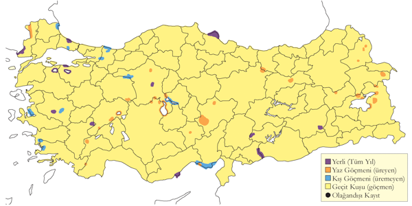
Üreme
Yuvalama Alanı: Çevresinde sazlıkların, yoğun su üstü vejetasyonunun ve çoğunlukla daha geniş sazlıkların ve bataklıkların bulunduğu tatlı su göllerinde ürer.
Yuvası: Su kenarındaki yoğun vejetasyonun içine yuva yapar. Kulu Gölü’ndeki bir adada, alçak çalıların arasında çıplak zeminde hafif bir çukurun içine yapılan yuvanın ot ve hav tüyleriyle kaplandığı gözlenmiştir ((Pforr & Limbrunner, 1982); A. Limbrunner, kişisel görüşme).
Yumurta Sayısı: Türkiye’de gözlenen yumurta sayısı 6-8 arasındadır.
Üreme Dönemi: Nisan ile haziran başı arasında yumurta bırakır. Yavrular ağustos ayına kadar gözlenebilir. MAR. 19 Haziran 1999’da Uluabat Gölü’nde bazıları küçük yavrulardan oluşan birkaç yavru grubu gözlenmiş, 1966’da Manyas Gölü’nde de yavrular kaydedilmiştir. KAR. Kızılırmak Deltası’nda çiftlerin çoğu sazlık alanlarda gözlenmiştir. 5 Mayıs 1992’de altı yumurtalı bir yuva bulunmuş ve 1 Haziran 1992’de yumurtlamanın nisan sonlarından daha geç olmadığını gösteren üç ve dört yavrulu iki grup kaydedilmiştir (Hustings & Dijk, 1994). 6 Ağustos 1971’de yedi yavrulu bir grup gözlenmiştir. AKD. 15 Mayıs 1962’de Çukurova’da sekiz yumurtalı bir yuva (Kirwan, 1997a), 8 Mayıs 1953’te Amik Gölü’nde yumurtalı bir yuva (Kirwan, 1997a), ve 27 Mayıs 1933’te yumurta kanalında yumurta bulunan bir dişi vurulmuştur (Meinertzhagen, 1935). Göksu Deltası’nda en erken 17 Haziran’da olmak üzere yedi yuva alanında yavrular gözlenmiştir. İÇA. 28 Nisan 1982’de Sultansazlığı’nda yumurtalı bir yuva bulunmuştur (Kirwan, 1997a). Mayıs 1973’te Kulu Gölü’nde altı yumurtalı bir yuva bulunmuştur. En erken 20 Haziran’da Eber Gölü’nde olmak üzere Çöl Gölü, Gönenç Gölü, Sultansazlığı, Mogan Gölü ve Kulu Gölü’nde yavrular gözlenmiştir. DOA. Yumurtlamanın mayıs sonunda olduğunu gösteren gözlemler 1985 ve 1987 yıllarında haziran sonunda Van Gölü’nde ve 29 Haziran 1987’de Edremit Sazlığı’nda yapılmıştır (Kirwan, 1997a).
Alttürler ve Sınıflandırma
Monotipik bir türdür.
Tepeli Patka
Aythya fuligula, Tufted Duck
Lokal ve az sayıda üreyen yaz konuğu, nispeten yaygın ve çok sayıda bulunan kış konuğudur.
Çok nadir ve lokal olarak üremiştir. Kızılırmak Deltası’nda ve 1967 ile 1981’de Çalı Gölü’nde (Kars) ürediği kanıtlanmış, son alanda 20 çiftlik bir popülasyon tespit edilmiştir. Başka bölgelerde düzenli olarak yazı geçirir. Uluabat Gölü ve Uyuz Gölü gibi bazı alanlardaki uygun habitatlarda çiftler gözlenmiştir. Üreme sonrasında, Temmuz 1982’de Kulu Gölü’nde tüy değişimi için toplandıkları düşünülen 700 birey (Kasparek, 1987), Eylül 1967’de ise Sodalı Gölü’nde çoğu erkek olan 1200 birey sayılmıştır.
Ülkenin batı ve orta bölgelerinde eylül başından nisan başına kadar kaydedilen yaygın ve bol bulunan bir geçiş türü ve kış konuğudur. Karadeniz’de denizde kışlar. Kış ortası sayımlarında; 1968-69 kışında 20.800 birey, 1996’da en yüksek sayı olan 58.271 birey, 1992’de yaklaşık 13.000 birey, 1993’te 16.965 birey (sadece Eğirdir Gölü’nde 10.478 birey) ve 1999’da 18.512 birey kaydedilmiştir. Son yıllarda ise ülke toplamı genellikle 5000-10.000 birey arasındadır. En önemli kışlama alanları Sapanca Gölü ve Eğirdir Gölü’dür.
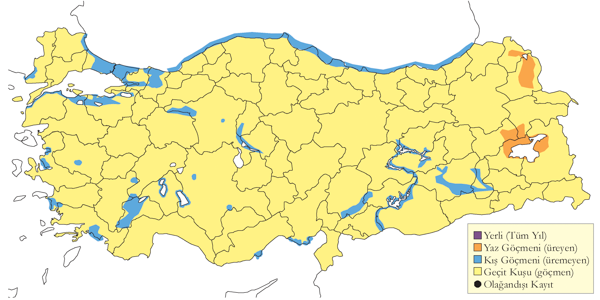
Üreme
Yuvalama alanı: Su üstü vejetasyonu olan tatlı su göllerinde ürer.
Yuvası: Yuvasını bir bitki öbeğinin altına kurar.
Yumurta sayısı: Türkiye’de 8 yumurtalı bir yuva bulunmuştur.
Üreme dönemi: Mayıs ayında yumurta koyar, temmuz sonuna kadar yavrular görülebilir. KAR. Kızılırmak Deltası’nda, 5 Mayıs 1992’de sazlıkta bir Juncus acutus öbeğinin dibinde sekiz yumurtalı bir yuva bulunmuş (Hustings & Dijk, 1994) ve 28 Mayıs 1968’de de ürediği kanıtlanmıştır (Dijksen & Kasparek, 1985). DOA. Çalı Gölü’nde 19 Temmuz 1992’de yavrularıyla birlikte iki dişi gözlenmiştir (Magnin & Yarar, 1997).
Alttürler ve Sınıflandırma
Monotipik bir türdür.
Karabaş Patka
Aythya marila, Greater Scaup
Özellikle Karadeniz kıyılarında az sayıda ve düzenli olarak görülen kış konuğudur.
Karadeniz ve Marmara Bölgesi’nde hemen hemen her yıl az sayıda görülmektedir. Modern kuş tayininin başlaması sonrasında gelen kayıtlar şöyledir (OST, 1969, 1972, 1975, 1978): Ocak-Şubat 1969’da Sakarya Deltası’nda yedi birey, Manyas ya da Uluabat Gölü’nde dört birey görülmüştür. Kızılırmak Deltası’ndaki Liman Gölü’nde 1990’ların başlarında kışlayan 38 birey, 1970’lerde aynı alandan bildirilen şüpheli kayıtların (Dijksen & Kasparek, 1985) geçerli olabileceğini düşündürür.
Çoğu İstanbul civarından olan geçmiş veriler şöyledir: Şubat 1893’te Çekmece’de daha çok dişi ve gençlerden oluşan bir grup gözlenmiş ve şu anda Sofya Doğa Tarihi Müzesi’nde bulunan erkek örnek toplanmıştır (Alléon, 1880). İstanbul Robert Kolej’de bulunan dişi örnek (Mathey-Dupraz, 1920–24), 1998’deki bir ziyarette bulunamamıştır (Kirwan, 1997b). 1946-47 ve 1947-48 kışlarında Çatalağzı açıklarında (Zonguldak) belirsiz sayıda gözlenmiş (Ogilvie, 1954), 15 Ocak 1950’de bilinmeyen bir yerden altı örnek alınmıştır (Kumerloeve, 1970a). Büyükçekmece’de Ocak 1963’te bir erkek ve Şubat 1964’te bir dişi kaydedilmiştir (Kumerloeve, 1970a).
Türün ilk yaz kaydı 30 Mayıs 1992’de Sodalı Gölü’nde kaydedilen iki erkektir (Kirwan & Martins, 1994). Öte yandan, 19 Nisan 1981’de Kulu Gölü’nde gözlenen iki birey, 12 Nisan 1990’da Göksu Deltası’nda gözlenen yaklaşık 20 birey (Kirwan & Martins, 2000) olağandışı geç kayıtlardır.
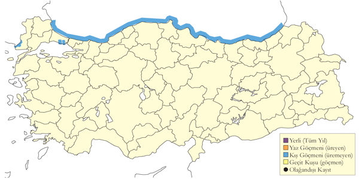
Üreme
Türkiye’de yuvalamaz. Avrasya ve Kuzey Amerika’nın kuzeyinde yuvalar.
Alttürler ve Sınıflandırma
Türkiye’de nominat alttürü bulunur.
Pufla
Somateria mollissima, Common Eider
Karadeniz kıyılarında nadiren az sayıda görülür.
İlk üç kayıt şu şekildedir: 20 Eylül 1983’te Çernek Gölü’nde (Kızılırmak Deltası) bir erkek (Dijksen & Kasparek, 1985), 3 Ocak 1984’te Göksu Deltası’nda ölü bir dişi (Kasparek, 1990), 1 Şubat 1997’de Sakarya Nehri deltasının batısında, Kefken açıklarında iyi tanımlanmış ilk kışında bir erkek ve iki dişi (Welch & Welch, 1998a) bulunmuştur. Bundan sonra Riva, Terkos Gölü kıyıları, İğneada, Kızılırmak Deltası, İzmit Körfezi ve Sakarya Karasu’da 20’den fazla kayıtta 1-3 birey tespit edilmiştir.
Türkiye’de üremez, en yakın üreme kolonisi Ukrayna kıyılarındadır. Güvenilir kayıtların tümü, 1975 yılında Ukrayna’nın Karadeniz kıyısında bir üreme alanının keşfedilmesinden sonra olmuştur. Bu popülasyon 1990’ların ortasına kadar 1000 çifte ulaşmış ve günümüze kadar artmaya devam etmektedir.
Şubat 1929’un ilk yarısında Tarabya ile Beykoz arasında (İstanbul Boğazı) gözlenen bir erişkin erkek (Kumerloeve, 1970a), tanım olmadığı için burada kabul edilmemiştir.
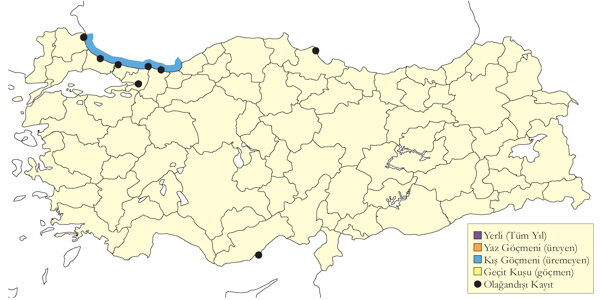
Üreme
Türkiye’de yuvalamaz. Ukrayna’daki koloni insan eliyle oluşturulmuş, kolonideki kuşlar zamanlar doğallaşmıştır. Doğal yuvalama alanı Kuzey Atlantik, Kuzey Buz Denizi ve Bering Boğazı’dır.
Alttürler ve Sınıflandırma
Ülkede gözlenen alttür nominat mollissima (Kuzeybatı Avrupa) alttürüdür.
Kadife Ördek
Melanitta fusca, Velvet Scoter
Türkiye’de üreyen nüfus yok olmuştur. Karadeniz kıyılarına az sayıda kışlar.
Doğu Anadolu’da az sayılarda kaydedilen çok lokal bir yaz konuğu idi. Az sayıda yüksek irtifa göllerinde 3000 m’nin üstünde üremiş olduğu düşünülür. Aktaş Gölü (Ardahan) kesin olarak ürediği tek alandır. 3 Ekim 1980’de 100 birey (Ven, 1980) ve 14-15 Temmuz 1994’te aralarında gençlerin de bulunduğu 725 birey (Yarar, 1995) kaydedilmiştir.
Geçmişte Nemrut Dağı’ndaki (Tatvan) krater gölünde 20 çifte ürediği düşünülmüştür. Ağrı Balık Gölü’nde geçmişte ürediği sanılmış, ancak görünüşe göre Haziran 2001’de artık üremediğine karar kılınmıştır. Çıldır Gölü’nde ürediği güçlü şekilde şüphelenilmiş, ancak teyit edilmemiştir. Kars Aygır Gölü ve Muş Nazik Gölü’nde azami 32 birey yazı geçirmiştir. Doğu Karadeniz kıyılarında kışlayan bireylerin yaz aylarında da kaldığı gözlenmiştir.
Gürcistan’da yuvalamaya devam eden bireyler Karadeniz kıyılarına az sayıda kışlar. Orta ve Doğu Karadeniz boyunca az sayıda kışlar. 1995 Aralık sonunda Yeşilırmak Deltası’nda 870 birey en yüksek kayıttır. Nadir olarak Batı Karadeniz, Marmara’da ve güneyde Akdeniz kıyısında kışlamıştır. Ocak 1970’de Burdur Gölü’nde 27 birey, Şubat 1966’da Mogan Gölü’nde ve Ocak 2005’te Hazar Gölü’nde kaydedilmiştir. Son yıllarda kaydedilen 50 birey.
4 Şubat 1917’de İstanbul Zeytinburnu açıklarında gözlenen iki birey ülke için ilk kayıttır.
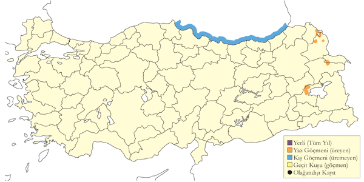
Üreme
Yuvalama alanı: Doğu Anadolu’daki iki ya da üç yüksek irtifa gölünde üremiştir. Tüm çabalara rağmen Türkiye’de yuvası bulunamamıştır. Şu anda Kafkasya popülasyonu sadece Gürcistan’da bir gölde yuvalamaktadır.
Yuvası: Türkiye’de yuva bulunmamıştır ancak diğer yerlerde yoğun bitki örtüsünün içine gizlenmiş şekilde yerde ve genellikle göllerdeki adalarda yuva yapar.
Yumurta sayısı: Olağan yumurta sayısı 7-10’dur.
Üreme dönemi: Eski gözlemlere göre temmuz ve ağustos ayında yuvalamıştır. DOA. 10 Temmuz 1967’de Nemrut Dağı’ndaki krater gölünde iki, yedi ve dokuz hav tüylü küçük yavru ile birlikte üç dişi ve 20 Ağustos 1967’de Balık Gölü’nde dört, beş ve altı yavrulu üç dişi kaydedilmiştir (Vielliard, 1968). Küçük ördeklerin sadece yaklaşık bir haftalık olduğu varsayılırsa yumurtlamanın haziranın ilk günlerinde olduğu anlaşılmaktadır. 23 Ağustos 1972’de Nemrut Dağı’nda gözlenen hemen hemen yarı gelişmiş yedi yavrulu bir dişi, yumurtlamanın haziranın son haftasında olduğunu göstermektedir. 9 Temmuz 1985’te Nemrut Dağı’nda beş çift ve iki genç birey gözlenmiştir. Son zamanlara ait bir üreme kaydı yoktur ve 9 Haziran 2001’de Balık Gölü’ndeki adada yapılan kapsamlı araştırmada ne yuva bulunmuş ne de erişkin görülmüştür.
Alttürler ve Sınıflandırma
Monotipik bir türdür. Eskiden Amerika ve Doğu Sibirya’da yaşayan Ak Kanatlı Kadife Ördek Melanitta deglandi ile aynı tür olarak kabul ediliyordu.
Kara Ördek
Melanitta nigra, Common Scoter
Nadir kış konuğudur.
Karadeniz’de çoğunlukla eylül ve mart arasında çok az sayıda kaydedilen kış göçmenidir. Düzenli olarak sadece Kızılırmak ve Yeşilırmak deltalarının açıklarında 20 birey kışlamaktadır. Karadeniz kıyısında toplam 20’den fazla kaydı vardır. Marmara ve Ege’de çok nadirdir, Akdeniz’de sadece bir kere kaydedilmiştir.
9 Nisan 1967’de Kocaçay Deltası’nda kaydedilen bir birey ülke için kabul edilebilir ilk kayıttır (OST, 1969). Öncesinde Ege’de nadir bir kış göçmeni olduğundan (Krüper, 1875) ve İstanbul Boğazı ile Ceyhan Deltası’ndaki şüpheli kayıtlardan (Kumerloeve, 1961) bahsedilmiştir.
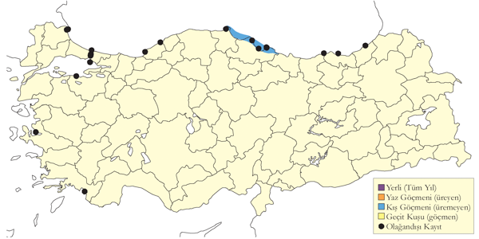
Üreme
Türkiye’de yuvalamaz. Avrasya’nın kuzeyinde yuvalar.
Alttürler ve Sınıflandırma
Monotipik bir türdür.
Telkuyruk
Clangula hyemalis, Long-tailed Duck
Nadir kış konuğudur.
Şubat 1893’te İstanbul (Büyük?) Çekmece’de, Alléon tarafından toplanan genç bir dişi ülke için ilk kayıttır ve bu örnek Sofya Doğa Tarihi Müzesi’nde görülebilir. Ardından, 13 Kasım 1968’de İzmit’te genç bir birey kaydedilmiştir (OST, 1975). Göksu Deltası Paradeniz Gölü’nde 1-2 Ocak 1986’da bir birey ve 5 Ocak 1989’da bir dişi (Kasparek, 1990) görülmüştür. Sakarya Nehri ağzında 18 Şubat 2004’te (Balmer & Betton, 2004b); 26 Şubat 2006’da Fırtına Nehri’nin ağzında birer birey fotoğraflanmıştır. En güncel kayıtlara göre; 7-19 Ocak 2008’de İğneada’da erişkin bir dişi, 13 Şubat 2008’de Kıyıköy’de bir erkek, 10 Aralık 2008’de İğneada’da bir birey (on üçüncü kaydı) ve 28 Mart 2009’da Enez’de bir birey (on dördüncü kaydı) görülmüştür (Kirwan & Özen, 2014).
İstisnai olarak, Van Gölü’nden 1977 ile 1987 arasında mayıs ve haziran aylarında yaz kayıtları mevcuttur. 10 Haziran 1977’de Gevaş’ın batısında Horkum’da iki birey ve Tatvan ile Ahlat arasında üç birey (Beaman, 1986), 22 Mayıs 1985’te Van’ın güneybatısında bir erkek (Martins, 1989), 9 Haziran 1987’de Van Sazlığı’nda bir erkek ve 22 Haziran 1987’de Van’ın 10 km güneyinde bir birey (Kirwan & Martins, 1994) kaydedilmiştir.
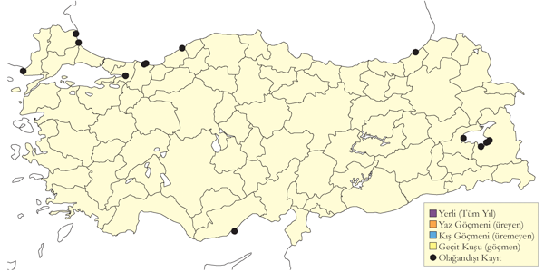
Üreme
Türkiye’de yuvalamaz. Kuzey İskandinavya dağlarında ve Rusya ve Kuzey Amerika’nın tundra kuşağında yuvalar.
Alttürler ve Sınıflandırma
Monotipik bir türdür.
Altıngöz
Bucephala clangula, Common Goldeneye
Nispeten yaygın ve az sayıda kış konuğudur.
Karadeniz, Marmara ve Ege’nin kıyı bölgelerinde ve daha nadir olarak iç bölgelerdeki sulakalanlarda ekim sonu ve nisan sonu arasında nadir bir kış konuğudur. En düzenli olarak Marmara ve Karadeniz bölgelerinde görülür. Kışın ülke çapında görülen kuş sayısı nadiren 100 bireyi geçer. 3 Şubat 1992’de Kızılırmak Deltası’nın açıklarında gözlenen 200 birey, kaydedilen en yüksek sayıdır. 2005-06 kışında Gediz Deltası’nda 72 birey, 3 Şubat 2002’de Gala Gölü’nde 60 birey sayılmıştır (Demirci, 2002). Son yıllarda ilkbahar sonunda Doğu Karadeniz’de kaydedilmiştir.
1977 ile 1993 yılları arasında Doğu Anadolu’da, çoğunluğu Van Gölü’nde olmak üzere, bir dizi yaz kaydı vardır ve bu kayıtlarda bazen birden fazla birey gözlenmiştir. Bu kayıtlar, yakınlarda üreyen bir popülasyonun ihtimalini düşündürmüştür (Kasparek, 1992).
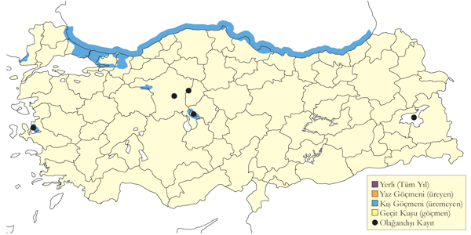
Üreme
Türkiye’de yuvalamaz. Avrasya ve Kuzey Amerika’nın kuzeyinde yuvalar.
Alttürler ve Sınıflandırma
Türkiye’de nominat alttürü bulunur.
Sütlabi
Mergellus albellus, Smew
Kuzey bölgelerine az sayıda gelen bir kış konuğudur.
Kasımdan nisan ortasına kadar ülkenin batı ve orta bölgelerindeki sulakalanlarda ve kıyılarda tipik olarak nadir ve muhtemelen düzensiz bir kış konuğudur. En çok Marmara, Karadeniz ve İç Anadolu’da kaydedilir. Her kış genellikle 100 bireyden daha azdır. Uluabat Gölü’nde 1967’de 300, 1969-70’de 1300, 1973’te 555, 1989’da 111 ve 1995’te 248 birey kaydedilmiştir. 1992’de Manyas Gölü’nde 102 ve 1993’te Büyükçekmece’de 79 birey kışlamıştır.
Nisan 1987 sonunda Diyarbakır’da kaydedilmiştir. Doğu ve Güneydoğu Anadolu’da oluşturulan büyük baraj göllerinde gözlenmesi beklenebilir. Ocak 1979’da Irak Razzaza Gölü’nde gözlenen 1000’den fazla birey (Scott & Carp, 1982), daha güneyde yüksek sayılarda kaydedilebileceğini göstermektedir.
Ancak ne tuhaftır ki, türün ilk keşfi Strickland tarafından İzmir’den alınan iki örnek ile yapılmıştır. Cambridge Üniversitesi Zooloji Müzesi’ndeki koleksiyonda bulunan bu örnekler, 6 Ocak 1836’da alınan bir erkek ve aynı yıl şubat ayında alınan bir dişiye aittir. 1946-48 yıllarında Çatalağzı açıklarında (Zonguldak) oldukça bol olduğu gözlenmiştir (Ogilvie, 1954).
11 Haziran 1969’da Eymir Gölü’nde (Ankara) bir erkek (OST, 1972), 27 Haziran 1987’de Göründü’de (Van) bir dişi (Kirwan & Martins, 1994) ve 27 Mayıs 1995’te Uluabat Gölü’nde bir erkek ve iki dişi (Kirwan & Martins, 2000) olmak üzere yazın üç defa kaydedilmiştir.
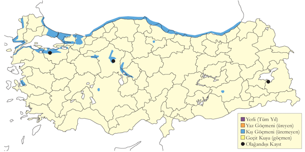
Üreme
Türkiye’de yuvalamaz. Avrasya’nın kuzeyinde yuvalar.
Alttürler ve Sınıflandırma
Monotipik bir türdür. Türkiye’de tanımlanmıştır.
Büyük Tarakdiş
Mergus merganser, Common Merganser
Nadir kış konuğudur.
Özellikle Marmara ve Karadeniz bölgelerinde az sayıda kaydedilen nadir bir kış konuğudur. 1997-2007 arasında artan gözlemci aktivitesine karşın sadece 10 kere kaydedilmiştir (Kirwan et al., 2003). Genellikle kıyısal sulakalanlarda görülür ve en düzenli olarak Kızılırmak ve Yeşilırmak deltalarında kaydedilir. Kızılırmak Deltası’nda görüldüğü en geç tarih 20 Mayıs’tır.
Doğu Anadolu’da şubat ve martta iki defa, yazın ise üç kere gözlenmiştir; 11 Haziran 1970’de Pasinler ile Horasan arasında Aras Nehri üzerinde bir çift, 7 Haziran 1986’da Van Gölü’nde bir birey ve 29 Haziran 1988’de Bendimahi Deltası’nda bir dişi ya da genç birey kaydedilmiştir. Kurutulmadan önce Sevan Gölü (Ermenistan) havzasında üreyen bir tür olduğu düşünülmüş, ancak ürediğine dair bir kanıt elde edilmemiştir (Adamian & Klem, 1999).
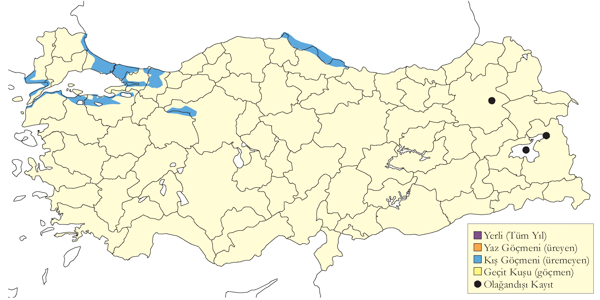
Üreme
Türkiye’de yuvalamaz. Avrasya ve Kuzey Amerika’nın kuzeyinde yuvalar.
Alttürler ve Sınıflandırma
Türkiye’de nominat alttürü bulunur.
Tarakdiş
Mergus serrator, Red-breasted Merganser
Nispeten lokal olarak ve orta sayılarda görülen bir kış konuğudur.
Kıyısal alanlarda ekim sonu ve nisan sonu arasında kaydedilen kış göçmenidir. En çok sayıda Doğu Karadeniz, Marmara ve Ege’de kaydedilir. Gediz Deltası’nda düzenli olarak yaklaşık 100 birey konaklar; Şubat 1996’da 397 birey sayılmıştır. Büyük Menderes Deltası’nda Şubat 1993’te 67 birey ve Yumurtalık’ta 44 birey kaydedilmiştir. Ege ve Doğu Akdeniz’deki alanlarda düzenli olarak önemli sayılarda kışlar (Eken, 1997d). Akdeniz kıyılarında seyrek olsa da Kıbrıs’ta oldukça düzenli bir türdür.
20-21 Mayıs 1994’te Göksu Deltası’nda geç kalmış bir birey kaydedilmiştir (Birdquest Newsletter 23: 59). Tek yaz kaydı 11 Haziran 1964’te Amik Gölü’nde (Antakya) kaydedilen yedi veya sekiz bireydir (Kumerloeve, 1966-67).
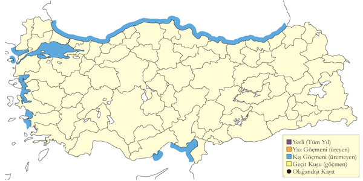
Üreme
Türkiye’de yuvalamaz. Avrasya ve Kuzey Amerika’nın kuzeyinde yuvalar.
Alttürler ve Sınıflandırma
Monotipik bir türdür.
Dikkuyruk
Oxyura leucocephala, White-headed Duck
Lokal olarak az sayıda üreyen yaz konuğu, nispeten yaygın ve yüksek sayıda bulunabilen geçit türü ve kış konuğudur.
İç Anadolu ve Doğu Anadolu’da tatlı veya acı (sodalı), sığ ve ötrofik göllerdeki yoğun sazlık sulakalanlarda az ila orta sayıda yuvalar. Van Gölü çevresinde ve Kars’taki küçük sulakalanlarda ürediği teyit edilmiştir. Doğu Anadolu’daki diğer alanlardaki üreme durumu belirsizdir. Niğde Akkaya Barajı’nda üremiştir (Kirwan, 1994). Üreme döneminde kaydedildiği Karadeniz Bölgesi’ndeki bazı alanlarda yuvalayabilir. Doğu Akdeniz sulakalanlarında yaz kayıtları, üremeyen bireylere aittir.
1980’lerin sonu ve 1990’ların başı arasında dört kilit alanda (Ereğli Sazlığı, Hotamış Gölü, Sultansazlığı ve Kulu Gölü) üreyen İç Anadolu popülasyonu muhtemelen 150 çiftin üzerindeydi (Robinson & Can, 1998). Ancak 1990’ların ortasında Ereğli Sazlığı ve Hotamış Gölü’nün kurumasıyla sayıları azalmış, Kulu Gölü’nde üremez olmuştur (Richardson, 2003). Kozanlı Gökgöl ve Uyuz Gölü’nde az sayıda üremeye devam etmektedir.
Mart ile mayıs başı arasında birçok alanda geçiş sırasında gözlenir. 23 Mart 1992’de Kızılırmak Deltası’nda 1246 birey ve Mart 1990’da Ereğli Sazlığı’nda 508 birey toplanmıştır. Mayıs ve haziran arasında toplanan sürüler muhtemelen üreme alanlarına dağılacak kuşlardan oluşur. Temmuz ve eylül arasında toplanan sürüler ise üreme sonrası dağılmaya ve göç almaya işaret eder. Temmuzda Kulu Gölü’nde 500 birey ve ağustosta Sodalı Gölü’nde 600-1000 birey kaydedilmiştir.
Kışın Akdeniz’deki birkaç sulak alanda yüksek sayıda, İç Anadolu’da genellikle daha az sayıda kaydedilir. Batı ve orta bölgelerindeki diğer yerlerde ise daha nadiren, özellikle sert hava koşullarında kaydedilir. Karadeniz Bölgesi’nde düzensiz olarak yüksek sayılarda kışlar. Bir dönem dünya popülasyonunun %50’sinden fazlasının Burdur Gölü’nde kışladığı düşünülmüştür; buradaki sayımlarda 1987’de 6400, 1988’de 9230, 1989’da 6700 ve 1991’de 10.927 birey kaydedilmiştir (Green & Anstey, 1992). Ancak 1992 sonrasında sayılarda azalma görülmüş; 1992’de 3264, 1993’de 3010 ve 1994’de 3337 birey sayılmıştır. Bu sayımlar son derece hassas olup, eş zamanlı üç ekip tarafından ideal hava koşullarında gerçekleştirilmiştir. Burdur Gölü’nde 1993’te 1991’e göre daha az genç bireyin sayılması, daha düşük üreme başarısını gösterebilir. Bir ihtimal, Kazakistan ve çevre ülkelerdeki üreyen nüfustaki azalış, Türkiye’deki kışlama nüfusunun azalmasını açıklayabilir. Bu azalmada şüphesiz kaçak avcılığın da payı vardır; 1992-93 kışında Burdur Gölü’nde 1000’den fazlasının vurulduğu tahmin edilmiştir. Ayrıca son yıllarda Burdur Gölü’nün kuruma sürecinin başlaması ve tuzluluğun artması da bir etken olabilir.
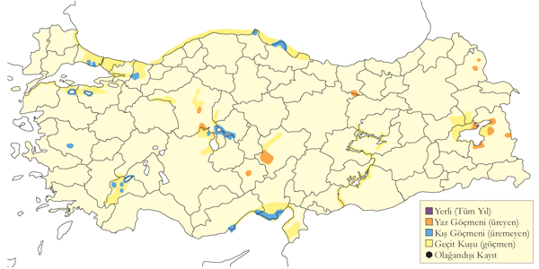
Üreme
Yuvalama alanı: Çoğunlukla büyük sulak alanların yakınlarında genellikle 10 hektardan küçük ve 2 metreden sığ, sualtı vejetasyonu bol ve su aynalarının bulunduğu geniş sazlıklara sahip tatlı su göllerinde ya da sodalı göllerde ürer (Anstey, 1989). Aynı alanda birkaç çift üreyebilir.
Yuvası: Yuva, ölü saz gövdeleri ile diğer sucul bitkilerin düzgün bir kâse oluşturacak şekilde örülmesi ile oluşturulmuş, birkaç tutam açık gri tüy ile astarlanmış dayanıklı bir yapıdır.
Yumurta sayısı: Bir yuvada en fazla 10 yumurta kaydedilmiştir. 19 Haziran 2004’te aynı gölde diz boyu derinliğindeki suda yoğun bir sazlığın içinde iyice gizlenmiş bir şekilde suyun üzerinde dikey sazların dibine tutturularak yapılmış bir yuvada on yumurtalı tamamlanmış bir kuluçka bulunmuştur. Diğer yerlerde olağan yumurta sayısı 5-12’dir. Dikkuyruk, vücut ölçülerine göre son derece büyük ve ağır yumurtalar koyar; yuva bu ağırlık nedeniyle suya batabilir.
Üreme dönemi: Mayıs başı ve temmuz başı arasında yumurta koyar. Eylül sonuna kadar yavrular görülebilir. İÇA. 13 Temmuz 1987’de Kulu Gölü’ndeki sazlıkların içindeki yuvada yedi yumurta gözlenmiştir; muhtemelen dişinin kuluçkaya ara vermesi nedeniyle yuva ve yumurtalar kısmen su altında kalmıştır (Anstey, 1989). Üreme kayıtlarının çoğu 3-10 yavrudan oluşan gruplardır: İç Anadolu’daki en erken kayıt, 5 Haziran 1975’te Kulu Gölü’nde gözlenen üç büyük ve üç hav tüylü yavrudur; bu durum yumurtlamanın mayıs başında olduğunu gösterir. 6 Ağustos 1972’de (kurutulmuş) Gönenç Gölü’nde 20 günlük beşer yavrularıyla iki dişi ve dört günlük altı yavrulu bir dişi gözlenmiştir; bu kayıtlar yumurtlamanın haziran ortası ile temmuz başında olduğunu göstermektedir. İç Anadolu’da, temmuz ve ağustosta birçok yavrulu aile kaydedilmiştir. DOA. Haziran-eylül ayları arasında Van Gölü’nde 9 Haziran 1987 ve 14 Haziran 1990’da gözlenen genç bireyler, yumurtlamanın mayıs ortasında olduğunu göstermektedir. Temmuz-ağustos arasındaki diğer kayıtlar, yumurtlamanın haziran ortasında başladığını düşündürmektedir. Erçek Gölü yakınlarındaki küçük bir gölün ortasında dikey sazlardan oluşan bir adada bir yuva bulunmuştur; sucul bitkiler kullanılarak sazların dibine yapılmış olan yuvada 11 Haziran 2001’de iki yumurta olduğu, kuluçkanın henüz tamamlanmadığı gözlenmiştir; alanda sekiz erkek ve yedi dişi birey kaydedilmiştir. Ancak oldukça kapsamlı bir araştırma yapılmasına rağmen başka bir yuva bulunmaması, üremenin henüz tam anlamıyla başlamadığını göstermektedir.
Alttürler ve Sınıflandırma
Monotipik bir türdür.